七、铁路沿线多时相遥感研究汇报
0 总体技术路线与当前进度
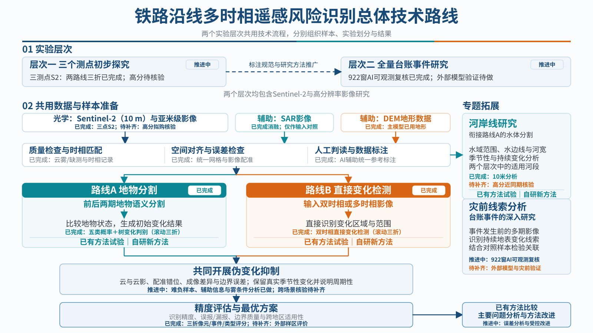
项目按总体技术路线推进：先在三个测点完成数据、参考标签与两条检测路线的比较，再把固定方法推广到台账事件；河岸线和灾前线索作为专题拓展。当前已完成三个测点Sentinel-2时间测试、两条路线与多维评分；高分独立核验、台账外部模型检验和近同期河岸检验仍需补齐。
1 研究问题与阶段进展
1.1 从研究问题开始：10米影像能识别什么
本研究面向铁路沿线地表扰动与环境变化，研究如何从多期卫星影像中找出值得进一步核查的变化位置，并解释其地物背景。研究对象包括施工清表、采挖、新增裸土、林地扰动、道路或人工表面变化，以及水域范围变化。变化检测输出是一张待核查的空间线索图；地表变化是否与具体灾害有关，还需要结合地形、现场资料、发生时间和专业判断。
Sentinel-2提供可持续获取的多光谱时间序列，适合建立多年、跨季节的背景。它的一个10米像元对应约100平方米，许多窄条、点状或短时事件只有少数像元，部分事件在像元内只占很小面积。研究因此同时回答三个问题：模型能够检出多少变化，误报集中在什么条件，以及哪些问题必须由更高分辨率或其他传感器补充。Sentinel-2多光谱、空间分辨率和时间序列的技术背景见欧洲空间局Sentinel-2任务说明。
本次从研究问题、数据构建、技术路线和实验口径完整展开。阶段进展表说明当前已有的证据与需要补齐的工作。
1.2 两条路线围绕同一问题比较
直接变化检测路线把前后两期影像输入同一个变化模型，直接预测每个像元的变化概率。这条路线可以学习同一地物类别内部的变化，例如植被覆盖仍属于植被、但发生明显退化或采伐。多光谱指数、历史同期和地形等辅助信息，分别提供光谱变化、季节背景与空间条件。
先分割后检测路线先预测每期的地物概率，再把前后地物概率、光谱差异和时序线索交给变化判别器。研究中的“先分割后检测”需要进一步区分：直接比较两张硬分类图，与使用分割概率和原始光谱训练变化判别器，是两种不同的方法。前者只能识别类别翻转；后者可以在地物类别未翻转时仍识别变化。两条路线共享变化定义、测试影像对和验证集定门槛规则，才能比较其贡献。
1.3 当前完成情况
| 工作内容 | 当前已完成的内容 | 本次能够报告什么 | 仍需补齐什么 |
|---|---|---|---|
| 多期影像与变化数据 | 三个样区的Sentinel-2影像对、质量标识及变化标签；统一变化标签版本 | 数据来源、影像对构建、变化定义和训练/验证/测试划分 | 持续检查配准空边、缺测和存疑标签 |
| 地物分割数据 | 五类地物标签的生产、逐期核查及概率导出流程 | 地物标签与变化标签的关系；分割精度和变化检测精度分别报告 | 独立复标一致性及高分核验 |
| 模型比较 | 直接检测、先分割后检测、多种骨干与参数高效微调；正式结果逐方法归档 | 同一滚动起点划分下的各折、三折等权、合并与多维评价 | 未完成或协议不同的实验单列，不参与主排序 |
| 多源信息与融合 | 输入、特征、后段与输出层融合的代表性对照 | 哪些改动有对应的受控比较，哪些仅为探索结果 | 对缺少独立种子、缺少完整数据移除对照的结论继续确认 |
| 错误诊断 | 按像元、事件、地物类别、成像条件和河岸带分析；建立逐对错误清单 | 成功、误报、漏报和困难案例，及其对应的混淆矩阵 | 把视觉解释变成独立核验，避免只挑容易成功的案例 |
| 高分辨率资料 | 原有参考影像与吉林一号93景拟购目录；完成日期和覆盖核算 | 需要核验的对象、候选日期、目录缺口和产品验收要求 | 新询价、授权、下单及到货验收；原目录不等于已采购 |
| 河岸与台账 | 河岸历史水域分析；匿名台账窗口的AI辅助图像复核统计 | 10米尺度下的可观测范围和更广泛研究设计 | 同日高分、水位与降雨资料、独立专业复核和外部检验 |
1.4 下一阶段工作的先后顺序
第一步是保存本次已冻结的实验结果与评价口径。第二步针对错误集中的影像对补证据，优先处理会改变“误报、漏标或真实变化”判定的样本。第三步把高分核验结果用于建立新的独立标签或下一轮训练数据，并重新冻结评价集合。模型改进、标签修订和核验结果应有清楚的先后关系，不能在同一测试集上边观察错误、边改模型，再把改善后的分数当作独立验证。
还没有完成的内容主要包括：独立标注者的一致性评估、仅利用部署时可获得信息的门槛适应、对雾和缺测的稳定处理、米级岸线核验，以及台账事件上的外部模型检验。这些内容分别需要新数据或新的实验设计，当前稿中作为明确的后续工作列出。
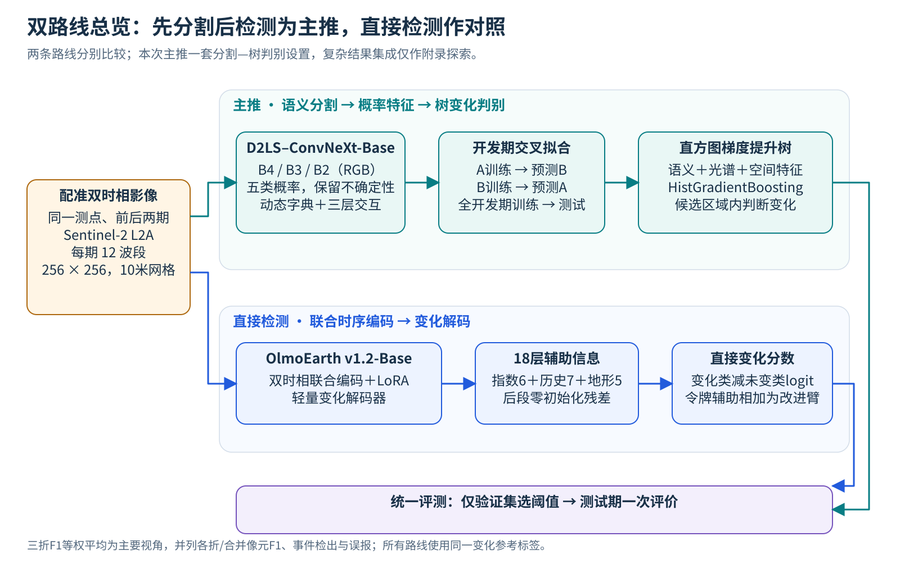
2 数据构建与参考标签
2.1 研究范围与观测尺度
研究覆盖株洲南、衡阳北、韶关南三个铁路沿线样区，构建2021年7月至2026年7月的Sentinel-2 L2A多光谱时序。每个样区采用256×256统一像元格网；10米格网下单幅约覆盖2.56×2.56公里，单个像元面积约100平方米。12波段输入包括可见光、红边、近红外、短波红外及大气相关波段；原始20米、60米波段重采样到共同格网，不增加其原始空间信息。
前后期影像以同一地理范围配对。前期影像按局部配准结果对齐到后期；云、缺测、图外空边和不可靠区域使用质量掩膜。变化标签取值为0“不变”、1“变化”、255“不参评”。阴影、水色、物候、农田季节与明确地表扰动的定义需要分开，不能把所有光谱差都当成目标变化。
2.2 两套标签解决两个不同问题
变化参考标签直接监督“这两期之间哪里变化”，五类地物参考标签监督“这一期是什么地物”。五类为水体、植被、耕地、裸露和建成。道路与建筑通常合在建成类，因此道路变宽等同类内部变化不一定带来类别翻转。
变化标签的构建记录中，398个变化框来源为AI辅助352个、组长保存记录45个、来源未记录1个。保存角色不能等同于人工专家标注；本稿将其称为“AI辅助像元精标及保存记录统一构建的参考变化标签”。地物标签主要来自AI预标及多模型交叉复核；“多方复核”是多个AI代理的交叉检查，并非三位独立人工专家。
地物参考构建使用全期影像进行稳定段传递与季节核查，包含测试时期的视觉信息。网络训练仍按时间划分；但标签生产的全时序信息与网络仅用开发期训练应分别说明。历史学生标注没有直接整批导入正式标签，曾有10期用于诊断、部分建议被采纳，因此其后续对照不是完全独立盲验。稀疏参考点也按其已核实的用途单列，不把所有参考资料合称为独立人工金标准。
2.3 从原始观测到可训练样本
数据流程包括：统一投影和格网、反射率与波段次序整理、质量掩膜、前后期配准、变化参考构建、逐期地物参考构建、时间划分冻结以及训练所需的标准化。统计量、权重选择和判别阈值的开发过程须与测试评价分开；标签构建中的时序背景则按上述事实单独披露。
| 数据对象 | 规模或形式 | 用于什么 | 信息边界 |
|---|---|---|---|
| 多光谱变化影像对 | 511对；12波段；256×256 | 训练与评价直接变化检测 | 本次测试300对 |
| 变化参考像元 | 全库19,768个变化像元 | 二值变化监督 | 不参评像元不计入混淆矩阵 |
| 逐期地物参考 | 424期；五类；统一时序口径 | 训练分割模型 | AI辅助参考；全期时序参与标签核查 |
| 分割概率测试评价 | 291期 | 逐期分割及下游检测 | 同一图像可能被多个影像对使用 |
| 历史学生参考 | 95期中56期落入测试 | 历史口径对照 | 非完全独立盲验 |
| 稀疏参考点 | 152条中115条落入测试 | 点位类别对照 | 覆盖有限；与像元面积评价分开 |
| 匿名台账图像复核 | 922个窗口，映射990条记录 | 研究10米可观测性 | 不等于模型召回率 |
3 时间划分与统一评价
3.1 训练必须早于验证与测试
采用三个滚动起点：各折独立训练，训练期在前，验证期用于选权重和阈值，测试期用于冻结后的评价。测试空间仍来自三个已有样区，因此这是跨时间泛化，不能表述为已经完成未知地区的空间外推验证。旧的按年三折与本次口径不一致，仅作历史记录，不混入主排序。
3.2 为什么以三折等权为主
先分别计算每折变化类F1，再对三折取算术平均，使短期与长期测试各占三分之一。每个正式注册种子均完成三折后，再对种子结果取平均。合并像元F1将三折的TP、FP、FN相加后计算，反映总体像元判别；两者回答不同问题，均保留。
本次测试有22、20、258对影像，变化像元905、2589、3678个。测试对多不意味着变化像元按同一比例增加，不能只按影像对数解释合并F1。三折等权也不是三个独立地区的置信保证。
3.3 阈值、重复与不确定性
阈值由统一评分器在本折验证集合并F1上确定，测试使用相同阈值。不用测试图像的最好效果重新选阈值。置信区间以影像对为重抽单位，在每折内部独立重抽，再重新计算三折等权；合并F1另算区间。方法差异使用相同配对影像的重抽索引，保留成对比较关系。单种子结果不能用标准差0冒充稳定性。
先分割后检测的“三种子”只指后续树检测器的重复；地物分割网络按单种子训练full/A/B模型。一个跨模型分数平均输出，也不能当成多个独立训练重复。本报告把这些含义直接写在表内。
| 测试窗口 | 训练截止 | 验证窗口 | 训练对 | 验证对 | 测试对 | 测试变化像元 |
|---|---|---|---|---|---|---|
| 2023年4—7月 | 2022年10月之前 | 2022年10月—2023年3月 | 114 | 53 | 22 | 905 |
| 2023年11月—2024年3月 | 2023年10月之前 | 2023年10月 | 210 | 6 | 20 | 2589 |
| 2024年4月以后 | 2023年11月之前 | 2023年11月—2024年3月 | 221 | 20 | 258 | 3678 |
| 评价维度 | 精确定义 | 解释 |
|---|---|---|
| 像元精度/召回/F1 | 仅对参考值≠255的像元计算 | 全变化是主任务 |
| 事件检出率 | 参考变化8连通片≥4像元，至少30%像元被报出算检出 | 4像元约400平方米；不是台账灾害事件 |
| 误报片占比 | 有效范围≥4像元的预测片中，与参考变化零重叠的比例 | 不同于FP/(FP+TN) |
| 变化类型召回 | 在各标签变化像元上的检出比例 | 标签可能重叠，不能把各类型支持数直接相加 |
| 地物误报率 | 某地物不变像元中被报为变化的比例 | 与该类在全部误报中占比不同 |
| 有雾/河岸/测点 | 各子集混淆数先合并后算，再平均种子 | 附加视角，不是三折等权主指标 |
| 地物分割mIoU | 五类交并比的平均 | 评价参考一致性；不能替代变化F1 |
4 常规主方案与总体结果
4.1 主讲一个可复现的常规方案
当前选用 D2LS–ConvNeXt-Base RGB五类分割＋交叉拟合概率＋直方图梯度提升树 作为主方案：一个分割方法、一个固定的变化分类器，不进行跨十五模型的验证择优集成。三折等权F1为 0.6878，合并像元F1为 0.6613。这是现有数据和评价口径下的观察结果，后续重点是独立核验与减少漏报。
直接检测以 OlmoEarth v1.2-Base双时相LoRA＋18层辅助信息后段残差旁支＋难负样本训练 为清楚的基线，三折等权F1为 0.6408。在同一架构中将辅助信息额外加到输入令牌，三种子均值 0.6616；该改进仍是单模型，但配对区间跨0，不能仅凭点估计认定改善已稳定成立。
主推先分割后检测的依据不只是一行最高分：D2LS RGB方案在三次树训练中波动较小、地物概率可解释、分割与检测模块可分别核验。直接模型在事件检出上有其优势，因此保留为对照和后续改进路线。复杂结果集成只放附录，最高分不作为选择它的理由。
| 完整方法与实际改造 | 2023春夏 | 2023冬—2024春 | 2024年4月以后 | 三折等权F1 | 合并像元F1 | 重复含义 | 等权F1的95%区间 | 事件检出率 | 误报片占比 |
|---|---|---|---|---|---|---|---|---|---|
| D2LS–ConvNeXt-Base五类分割（RGB）＋交叉拟合概率＋直方图梯度提升树变化检测（去背景辅助层） | 0.7377 | 0.7585 | 0.5672 | 0.6878 | 0.6613 | 3次树训练；分割单种子 | 0.4371—0.7571 | 51.4% | 42.0% |
| OlmoEarth v1.2-Base＋LoRA双时相联合编码变化检测＋18层指数/历史/地形零初始化残差旁支＋难负样本训练 | 0.7348 | 0.6516 | 0.5361 | 0.6408 | 0.5837 | 3个训练种子 | 0.3814—0.7192 | 63.6% | 56.1% |
| OlmoEarth v1.2-Base＋LoRA＋输入令牌级18层辅助嵌入相加＋18层指数/历史/地形零初始化残差旁支＋难负样本训练 | 0.7434 | 0.6832 | 0.5583 | 0.6616 | 0.6155 | 3个训练种子 | 0.3949—0.7418 | 64.0% | 52.4% |
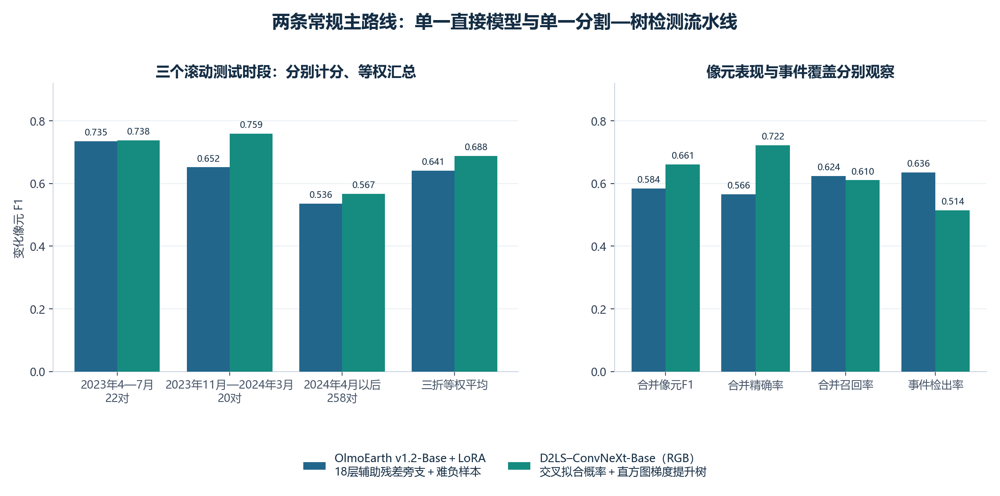
| 选择问题 | 本次安排 | 判断依据 |
|---|---|---|
| 主要汇报/复现方案 | D2LS–ConvNeXt-Base RGB分割＋直方图梯度提升树 | 单一清楚流水线，三折F1 0.6878 |
| 直接检测基线 | OlmoEarth v1.2-Base LoRA＋18层后段辅助残差 | 结构与训练机制明确，三种子完整 |
| 直接模型改进 | 辅助信息输入令牌相加，保留后段旁支 | F1 0.6616；配对增量区间跨0，继续确认 |
| 复杂多模型输出融合 | 附录探索记录 | 成员多、验证选择层次多，不作为主方案 |
| 最终部署决定 | 待高分核验与外部样区验证后冻结 | 现有三个站点的时间测试不能代替外部验证 |
| 常规方案 | 注册重复 | 三折等权F1均值 | 重复间标准差 | 折内影像对重抽95%区间 |
|---|---|---|---|---|
| D2LS–ConvNeXt-Base五类分割（RGB）＋交叉拟合概率＋直方图梯度提升树变化检测（去背景辅助层） | 3 | 0.6878 | 0.0043 | 0.4371—0.7571 |
| OlmoEarth v1.2-Base＋LoRA双时相联合编码变化检测＋18层指数/历史/地形零初始化残差旁支＋难负样本训练 | 3 | 0.6408 | 0.0200 | 0.3814—0.7192 |
| OlmoEarth v1.2-Base＋LoRA＋输入令牌级18层辅助嵌入相加＋18层指数/历史/地形零初始化残差旁支＋难负样本训练 | 3 | 0.6616 | 0.0183 | 0.3949—0.7418 |
5 直接检测：OlmoEarth与项目改造
5.1 原始基础模型提供了什么
OlmoEarth是面向多模态地球观测的预训练编码器，原任务是从遮蔽输入学习稳定潜在表示，并非直接训练铁路变化检测器。它联合处理空间、时间和模态信息。项目使用官方v1.2-Base：12层、768维Transformer，4×4原像元的补丁。10米输入的令牌间距因此约40米，随后需要解码上采样恢复像元输出。v1.2官方更新加入旋转位置编码；将Sentinel-2分辨率分组压缩以降低开销是v1.1阶段的重要更新，不应全部归给v1.2。
5.2 本项目的输入与双时相组织
输入是同一256×256测点前后两期Sentinel-2 L2A的12个波段。先从本项目归一化数据恢复反射率，再按发布者要求重排波段并使用预训练统计归一化。编码器将两期作为T=2序列联合编码，并非两个完全独立编码器的孪生推理。默认训练使用固定相邻月份的时间标记；真实成像日期是单独的消融，不能泛称主模型已显式学习所有真实日期。
编码器输出按波段组聚合，得到两期特征 。本项目变化解码器的输入为
保留有符号差值，使模型可以区分变化方向；同时保留两期原特征，避免相同差值在不同地物上被强行解释为同一事件。2304通道拼接后通过1×1卷积压到256通道，再经过两次“2倍双线性上采样＋3×3卷积＋批归一化＋ReLU”，通道256→128→64，最后3×3卷积和1×1两类输出头。重叠滑窗先平均64通道解码特征，再经输出头得到整幅变化结果。
5.3 LoRA的作用
冻结预训练主权重，仅在每层注意力query和value投影中学习低秩增量：
原双时相主干的LoRA参数为589,824。低秩更新限制了小数据训练时的自由度；这是模型选择动机，不能仅凭参数少就断言训练更稳定。轻量变化解码器和辅助分支是本项目训练模块。来源：LoRA原论文。
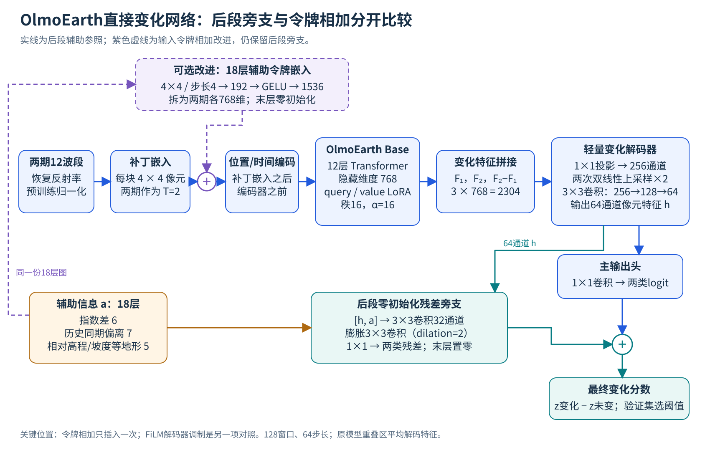
6 辅助数据构建、注入位置与训练
6.1 正式主模型使用18层，不是所有候选数据
正式直接模型的辅助输入为三组18层：
| 组别 | 层数 | 实际构建 | 作用 |
|---|---|---|---|
| 双时相指数差 | 6 | NDVI、NDWI、MNDWI、BSI、SWN、亮度的后期减前期 | 提供植被、水分、裸土与亮度变化 |
| 往年同期偏离 | 7 | 前后期NDVI/MNDWI/BSI相对历史同期的稳健偏离，以及后期历史样本数 | 区分季节性变化与异常变化 |
| 地形 | 5 | 相对高程、坡度、坡向正弦、坡向余弦、局地起伏 | 提供地形背景 |
工程中完整候选库存为46层：影像质量15＋指数6＋历史7＋Sentinel-1雷达6＋地形5＋历史用途7。46层库存不等于当前最佳模型全部使用。雷达已做加入消融，但没有进入正式18层最佳配置；降雨、气象资料不能因“存在资料”就写成模型输入。未在代码中使用的资料只能列为待研究因素。
六种指数的实际定义为NDVI=(B8−B4)/(B8+B4)，NDWI=(B3−B8)/(B3+B8)，MNDWI=(B3−B11)/(B3+B11)，BSI=((B11+B4)−(B8+B2))/((B11+B4)+(B8+B2))，SWN=B11−B8，亮度=(B2+B3+B4)/3。直接模型不是简单接入原始差值：每对在两期都晴空有效的像元上取差值中位数和MAD，标准化、截断至±6，再除6，使幅值有界；缺测处记0。其作用是突出相对于本对大多数像元的局地异常，而非把整体照度变化都当变化。
历史偏离对前后两期分别计算：选距被评价日期至少300天、年内日期相差不超过30天的清楚历史观测；至少3次观测才估计逐像元中位数/MAD，MAD下限0.02，z值同样截至±6并除6。第七层为后期历史有效观测数/10。历史参照仅利用该期以前的影像，与标签制备的全期稳定段传递是两个不同过程。
地形来自项目配准到10米网格的Copernicus DEM GLO-30及其派生层；网格重采样不等于原始高程测量提高到10米。相对高程为(高程−测点中位数)/50米、截至±1；坡度除45度；坡向正弦/余弦乘min(坡度/10度,1)，使平地不凭不稳定坡向制造信号；局部起伏除30米。
作为消融的雷达层取每期光学日期±12天最近的Sentinel-1 RTC，VV/VH先3×3压斑，再求ΔVV、ΔVH和Δ(VH−VV)；还附两期是否都有雷达、最大时间偏离/12、是否同一雷达景三个质量标记。允许光学日期之后的雷达意味着需要后续观测等待，不能将这组消融描述为光学到达即刻可运行。正式18层配置不依赖该雷达补齐。
历史用途7层以变化对前期及以前的晴空观测计算：水体频率、NDVI第10/50/90分位、BSI中位数、跨年“高NDVI≥0.6与低NDVI≤0.3都出现”的耕作轮回比例、有效观测数/50。影像质量15层为两期各四种厚云/薄云/云影/缺测空间图，加跨轨、两期雾、两期耀斑风险、间隔和配准位移等整幅常数图。质量标记存在不代表模型可靠依赖了它；应由删组重训、置乱和子集误报分析分别回答“能否改善”“当前是否使用”“在哪种条件下有用”。
6.2 后段零初始化残差旁支
把解码器最后的64通道像元特征 与18层辅助图 拼接，经两个32通道3×3卷积，第二层膨胀率为2，最后1×1投影到两类残差：
零初始化使训练起点等同仅影像模型，随后才学习辅助修正。该设计借鉴ControlNet的零卷积思想；本项目没有复制ControlNet的扩散模型或完整控制网络，公开名称应是“零初始化残差旁支”。来源：ControlNet原论文。
6.3 单模型改进对照：输入令牌级嵌入相加
在保留后段旁支的基础上，增加辅助嵌入器：18层辅助图经4×4、步长4卷积变为192维，再经GELU和1×1卷积得到1536维，拆为两期各768维的辅助令牌，分别加到两期影像的补丁嵌入。最后卷积零初始化。
插入位置只有一次：影像补丁嵌入之后、位置与时间编码之前。 后续12个Transformer块都能访问已注入的信息；不是在每一个编码器阶段反复相加，也不是多尺度注入。公开名称为“OlmoEarth v1.2-Base＋LoRA＋输入令牌级18层辅助嵌入相加＋零初始化残差旁支＋难负样本训练”。三种子平均约0.661645，对后段旁支模型的三折平均提升尚不足以支持显著性结论。
6.4 难负样本与训练
训练集中正影像对抽样权重3，正像元中心裁块概率0.5；其余裁块中以0.5概率围绕难负像元取块。难负像元要求标签为0、两期晴空，且指数差的稳健异常程度 ，其中
难负像元交叉熵权重乘5；总损失为CE＋Dice，忽略标签255。128×128裁块、翻转、90度旋转；推理窗口128、步长64。原配置AdamW学习率3×10⁻⁴、权重衰减10⁻⁴、3轮预热后余弦衰减，批8，每轮50步，最多80轮、至少20轮、20轮验证无提升早停；最佳检查点仅按验证集选。各实际运行步数以日志为准。三折训练影像对数114/210/221。
7 地物参考的生产与时间边界
五类分割使用c23统一参考标签，变化检测使用v20261008b统一变化标签；二者服务于不同任务，不能把分割类间差异直接等同所有真实变化。c23正式导出424期，来源字段全部为AI预标；Claude与两个Codex模型按同一规则背靠背核查，不能称为三位独立人工专家。学生已有10期mask没有直接纳入训练导出，但制备说明记录使用学生标注寻找分歧、复看光谱后采纳部分修改，因此相关参照不能笼统宣称与标签制备完全独立。学生制作的95期历史地物参照与152条验收点是另外的参考材料，其中落入当前测试期的56期与115条应单独列报，不能混成同一来源的测试真值，也不把台账当作逐像元金标准。
变化参考标签的构建记录包含398个变化框，来源字段为AI 352、组长保存45、未记录1；三测点像元精标版本字段同属AI辅助版本。由这些记录可以说明“AI辅助像元精标及组长保存记录统一构建的参考变化标签”，不能进一步推出所有框均由独立专家人工绘制，也不能把保存动作本身当成人工绘制的证据。
时间一致性制备使用全期影像辅助识别地类持续性，因此测试期影像可能影响参考标签的形成。按开发/测试期训练分割器与full/A/B交叉拟合，解决的是模型对训练样本输出过于乐观的问题，不能消除标签制备阶段的全期信息使用。当前结果应解释为在该统一参考标签和既定滚动划分下的比较；独立未来影像/独立人工复标仍是外部验证所需的证据。
8 先分割后检测：D2LS与树分类器
8.1 D2LS原方法机制与项目改造
D2LS（Dynamic Dictionary Learning for Remote Sensing Image Segmentation，ICCV2025）是语义分割方法。其关键是学习地类字典，使类别表征与影像特征通过交互注意力迭代更新；动态字典随当前影像调整，类别对比约束提高类间分离。本项目使用作者实现的ConvNeXt-Base骨干、5个类别令牌、3层字典—影像交互模块，保留辅助头和字典对比项。
上述公式描述实际损失组合，不应把简写当成原论文每个注意力模块的完整公式。五类标签统一使用本项目c23版本。最佳分割后检测分支使用B4/B3/B2真彩色输入和ImageNet归一化，ConvNeXt-Base来自TorchVision官方预训练权重。新增训练是遥感五类适配，未使用原论文数据集的成品类别头。
两个12波段版本必须分开：较早版本是在RGB模型之前增加可学习12→3的1×1适配层；10月23日新版本扩展了ConvNeXt输入stem到12波段。不能混为一项，也不能把12→3投影说成原生12波段编码器。10月23日新版本三折树检测均值约0.659231，未超过RGB分支约0.688。
ConvNeXt四级特征的通道为128/256/512/1024；各级通过线性映射投到256维，插值对齐到1/4尺度，拼接后用1×1卷积聚合。最深层特征进入图像调制器，经最大/平均池化与多层感知机，生成每个类别对其四个候选字典向量的softmax权重。加权组合得到图像相关的五个256维动态类别令牌；另保留五个基础静态令牌作为训练辅助。
三层交互反复执行两个方向的交叉注意力：类别令牌从影像中汇聚证据，像元特征再从更新后的类别令牌取回语义上下文。令牌与影像不是单向分类器关系，类别表征和像元表征共同更新。记影像特征为，类别令牌为，单层可写成以下结构示意（省略投影、多头和位置编码）：
最终类别令牌经三层MLP生成类别专属的线性分类向量，与两级PixelShuffle恢复的高分辨率影像特征相乘得到五类logit。因而“动态字典”不仅是一组固定类别原型，而是由本幅影像调制的分类表征。字典对比损失在作者实际代码中为“同类动态令牌的批内离散度/不同类均值令牌的距离”，并非另加一个InfoNCE分类头：
与原方法相比，本项目保留上述字典、双向交互与损失机制，改变的是铁路遥感五类任务、输入适配、全开发期/交叉拟合训练方式和后续树变化检测；后续变化判别不是D2LS原论文模块。
8.2 为什么必须交叉拟合
如果分割器在开发期语义标签上训练后，再给同一批影像输出概率用于训练变化分类器，第二阶段看到的是过于理想的分割概率，无法代表测试误差。项目按原定开发期规则分A/B两半：模型A只在A训练、给B预测；模型B只在B训练、给A预测。两部分拼起来形成开发期交叉拟合概率。测试期则由在全部开发期训练的full模型给出概率。
每折训练full/A/B三个模型，三折共9次；本轮D2LS预算为每段4000步、批8、裁块128、学习率2×10⁻⁴，单个原定种子设置。这9段不是9个独立随机种子。 后续树分类器的三个种子另行统计。概率为5×256×256，保存float16，并区分full/cf来源。
8.3 为什么不能把两期分割硬相减
二值变化标签表示“这一对影像可见的变化事件”，五类标签表示地表覆盖；二者并不一一对应。林地内部扰动、工地内新建、河岸局部冲刷可能前后仍属同一大类。硬地类相减在这些像元上没有变化信号；相反，混合像元、配准偏差、季相和云雾可使边界像元改变最大概率类别，产生伪变化。把五类mIoU做高，并不保证这个二值差分算子好。
类别概率保留了“未换argmax但置信分布发生变化”的信息，同时让后续分类器结合多光谱及空间证据区分真伪变化。极不平衡也放大了少量分割闪动的代价：设真变化比例为、召回为、没变像元的误报率为，则
当变化仅占千分量级，百分之一级的边界闪动就会远多于真实变化。因此本项目使用概率、光谱候选与学习型判别，而非简单剔除全部边界；后者也会删掉沿河岸、路边的窄条真实变化。
8.4 从语义概率构建变化特征
逐像元硬地类 。候选区域并集由两部分构成：地类发生变化（排除植被与耕地相互转换）和稳健光谱差超过训练期门槛的同类内部候选。正式运行中光谱候选门槛用训练正样本覆盖率约98%确定；测试标签不参与候选生成。
输入树模型的特征包括两期B2/B3/B4/B8/B11/B12、两期NDVI/MNDWI/BSI/亮度及差值、六个稳健z值和最大值、多尺度邻域均值与局地离散度、测点和季节/间隔上下文、两期五类概率及one-hot、概率内积、地类转移与邻域比例、候选连通域面积/平均异常度等。正式“去背景辅助层”配置移除历史同期、用途历史、地形和距铁路层；并没有删除测点、季节和时间间隔，所以不能写成“仅分割概率”。
标准去背景配置的特征可按组追溯：两期六波段12层、四指数及其差12层、稳健z及最大值7层、初级邻域统计5层、测点/季节/间隔6层、多尺度邻域17层、两期语义概率与转移23层、候选连通域3层，共85层。完整背景版本再加入历史7、用途历史7、地形5、铁路距离1，共105层。使用额外语义特征、后一期持续确认或雷达的试验另列，不沿用85层名称。
8.5 树分类器到底是哪一种
正式统一流水线为scikit-learn直方图梯度提升分类树（HistGradientBoostingClassifier），不是LightGBM。其通过逐轮加法拟合残差更新分类分数，连续特征先直方图分箱，再搜索树分裂：
本项目小树配置上限500轮、学习率0.05、每棵最多15叶、叶最少300像元、L2=5、类别平衡；保留全部正候选，每影像对最多抽8000负候选。三个树种子反映负候选抽样与训练随机性。候选外概率置0，候选内输出做0.5原图＋0.5的3×3均值轻平滑；正式阈值仍由统一评分器只看本折验证集确定。
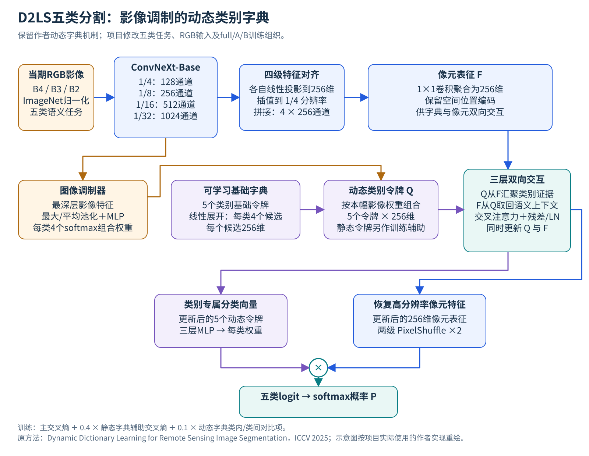
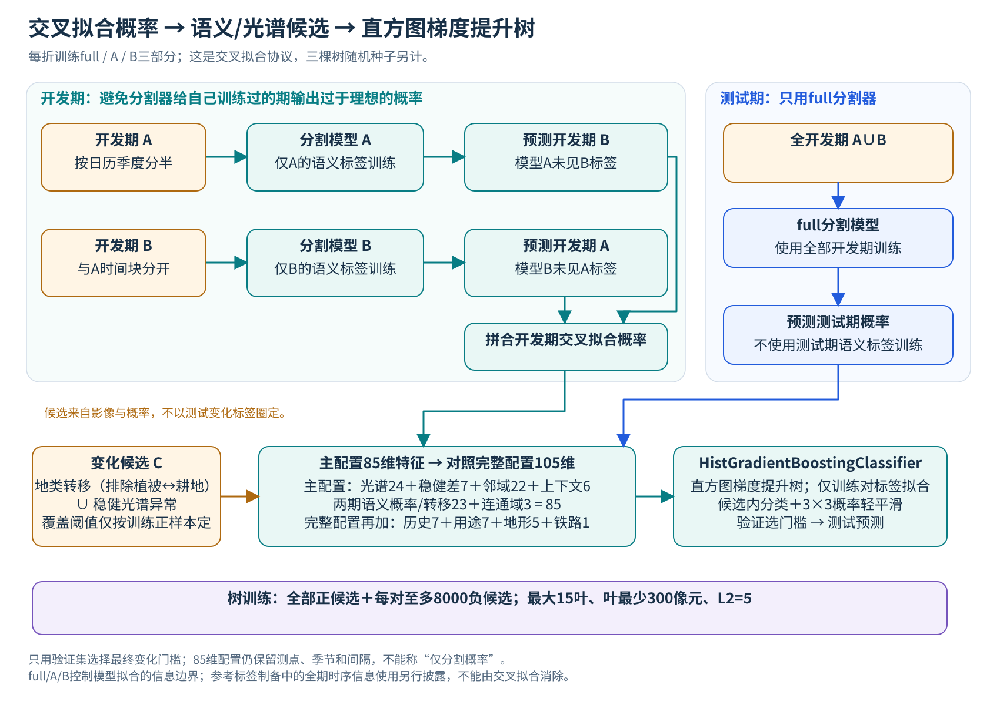
9 完整方法体系与重训诊断
9.1 Open-CD对照实现
Open-CD是实现工具箱，不能只以工具箱名替代实际结构。项目通过统一采样、CE＋Dice、验证选择检查点，将代表性网络接到本数据，输入六个波段及46层辅助图（每期52通道）；BAN仅RGB。输入层适配继承RGB权重并扩展，不能称多光谱预训练。
| 实际方法全名 | 骨干及关键模块 | 项目说明 |
|---|---|---|
| Open-CD版ChangeFormer | MiT-B0共享编码器＋多尺度特征拼接＋SegFormer头 | 是Open-CD简化结构，不能当成原作者完整差分解码器 |
| Bitemporal Image Transformer | ResNet-18 V1c前三段＋4个语义令牌＋Transformer编码/解码头 | 六波段＋46层辅助早融合 |
| Siamese Nested U-Net变化检测 | 基础宽度16的嵌套孪生卷积网络＋ECAM通道注意力 | 无预训练，从头训练 |
| ChangerEx | MiT-B0＋空间/通道交换＋特征差分对齐模块 | 使用Open-CD官方结构 |
| Bitemporal Adapter Network | 冻结CLIP ViT-B/16的9层特征＋MiT-B0侧编码器＋双时相适配头 | RGB输入，不能与52通道版本混写 |
经典FC-EF、FC-Siam-conc、FC-Siam-diff是作者式四级16/32/64/128通道卷积编码器；配置文件里保留的ResNet-34字段并不被这三种类使用。分别表示双时相通道早拼接、共享编码后跳连拼接、共享编码后跳连绝对差。项目增加46层零初始化残差旁支及难负样本训练。只有另一个U-Net早融合对照使用ImageNet预训练ResNet-34。
来源：Open-CD官方仓库、作者原始全卷积变化检测代码、ChangeFormer原论文、Bitemporal Image Transformer原论文、SNUNet-CD作者仓库、ChangeMamba原论文、ChangeMamba作者代码。DSIFN仅作相关研究文献，不列入已完成实验。
9.2 PeftCD重训与SAM3.1改造
PeftCD原框架用共享视觉基础编码器、LoRA或Adapter以及变化解码器；原作者支持DINOv3和SAM2。项目新增SAM3.1视觉编码器版，应明确“参照PeftCD的项目改造”，不应声称原论文包含SAM3.1。
10月23日重训包括：DINOv3 ViT-L/16（SAT-493M预训练）＋LoRA＋GroupNorm解码器；SAM2 Hiera-L＋LoRA＋GroupNorm解码器；SAM3.1的32层、1024维、16头视觉Transformer＋LoRA rank8＋单一两类变化头。SAM3.1只使用官方视觉编码器，不使用文本概念提示或多目标视频记忆模块。源影像裁块128，SAM3.1正式内部分辨率504；不能沿用协议早稿336或“双输出头”的描述。
重训明确使用50%正中心裁块、128窗口/64步长、Hann加权拼接logit，变化分数为类1减类0。原四分钟运行实际上已执行约4000步，不能未经核查写成“只训练几步”；正中心裁块也并非重训首次新增。旧导出只取第一分支，与作者双分支平均不一致；归一化、内部尺度、损失及预算亦同时调整，不能把效果变化单因归给BatchNorm，且没有证据证明原标签正负号反了。
正式重训DINOv3各折6500/5000/5000步，SAM3.1为5500/5000/5000，保留SAM2为13000/9000/8500；三折均值约0.505、0.458、0.481。SAM3.1冒烟未达到0.5，正式采用验证最佳权重完成三折，并单列该事实，不能说通过门槛。四种旧PeftCD短程结果仅作过程记录，不用于判定方法能力上限。
来源：PeftCD作者代码及论文链接、论文DOI入口、DINOv3原论文、SAM3/SAM3.1官方代码与版本说明。
9.3 10月23日新增的语义迁移、概率输入与雾增强
这些是不同的研究问题，不宜用一个“语义融合”名称概括：
- **D2LS五类概率辅助的OlmoEarth直接检测：**D2LS语义概率作为额外输入，与18层辅助残差、难负样本训练联合；语义输入共12层：前五类概率、后五类概率、总变差距离和概率内积。这12层接入后段零初始化残差旁支，开发期概率来自交叉拟合、测试期来自full模型。三个种子三折均值约0.659913。这是深度直接检测的额外输入，不是第二阶段树。
- **冻结D2LS分割预训练ConvNeXt-Base编码器＋变化解码器：**从10月23日12波段stem版分割检查点迁移四级ConvNeXt特征，全部冻结；各级对齐到1/4分辨率、拼接后形成两期及差值输入。推理不再使用D2LS动态字典解码器，单种子均值约0.540083。
- **OlmoEarth＋合成薄雾增强：**训练时以概率0.3、强度0.4模拟薄雾，三种子均值约0.653719；没有因此证明对真实雾域全面有效，应同时查看真实雾子集。
- **D2LS概率辅助的U-Net第二步变化检测：**ImageNet ResNet-34＋U-Net早融合，输入两期各六个光谱波段、18层指数/历史/地形和上述12层D2LS概率特征；新增第一层输入权重零初始化。与只去掉12层概率的同骨干U-Net构成输入对照。当前约0.611与0.556，按实际种子数展示。
- **冻结SAM3分割编码器＋简化变化头：**冻结本折开发期训练的SAM3五类分割视觉编码器，提取两期特征和绝对差；1×1卷积压至128通道，再经3×3的128、64通道卷积，并与36通道“两期12波段及有符号差”的32通道光谱支路融合，96→64→2输出变化。这是本项目语义预训练迁移试验，不等同官方SAM-CD原论文的完整网络。
9.4 最新单种子语义先验扩展
另有一项OlmoEarth v1.2-Base LoRA直接检测，将18层指数/历史/地形和12层D2LS–ConvNeXt-Base RGB语义概率先验合成30层辅助输入，在输入令牌相加后仍保留残差旁支。已完成的一次训练三折等权F1为0.6873。它依赖预先训练的分割概率，属于语义辅助的单架构扩展；当前仅有一个种子，列为探索结果，不改变本次的常规主方案。
| 测试窗口 | 实际训练步数 | 验证最佳权重步数 | 训练分钟 | 训练端验证F1 |
|---|---|---|---|---|
| 2023年4—7月测试 | 6500 | 6500 | 57.2 | 0.5774 |
| 2023年11月—2024年3月测试 | 5000 | 4500 | 47.0 | 0.7953 |
| 2024年4月以后测试 | 5000 | 2500 | 49.4 | 0.5856 |
| 测试窗口 | 实际训练步数 | 验证最佳权重步数 | 训练分钟 | 训练端验证F1 |
|---|---|---|---|---|
| 2023年4—7月测试 | 5500 | 5500 | 46.5 | 0.4885 |
| 2023年11月—2024年3月测试 | 5000 | 5000 | 32.6 | 0.7084 |
| 2024年4月以后测试 | 5000 | 5000 | 30.0 | 0.5321 |
| 测试窗口 | 实际训练步数 | 验证最佳权重步数 | 训练分钟 | 训练端验证F1 |
|---|---|---|---|---|
| 2023年4—7月测试 | 13000 | 4500 | 47.6 | 0.5140 |
| 2023年11月—2024年3月测试 | 9000 | 9000 | 31.4 | 0.8018 |
| 2024年4月以后测试 | 8500 | 8500 | 30.3 | 0.5827 |
10 受控比较、辅助数据作用与消融
10.1 消融优先回答一个因素的作用
辅助信息对照比较“无辅助”与“18层后段残差旁支”；注入位置对照再比较“仅后段”与“输入令牌相加＋后段”。它们比不断叠加多个预训练模型，更接近能够解释的改动。下表仍列实际种子数；单种子去历史、加雷达与两种子FiLM不能与完整三种子主模型等同解释。
配对区间同时反映测试影像组成的不确定性。18层旁支相对无辅助约提升0.0189，输入令牌相加相对仅后段约提升0.0208，但两项区间均跨0。现阶段可说“方向上有改善”，不能写成“已经证明每一种辅助数据均有效”。雷达输入还包含光学日期前后12天最近观测，形成可能等待未来观测的条件；不能据此声称即时监测系统。
| 完整方法与实际改造 | 2023春夏 | 2023冬—2024春 | 2024年4月以后 | 三折等权F1 | 合并像元F1 | 重复含义 |
|---|---|---|---|---|---|---|
| OlmoEarth v1.2-Base＋LoRA双时相联合编码变化检测＋难负样本训练（无辅助图） | 0.7155 | 0.6444 | 0.5059 | 0.6219 | 0.5706 | 3个训练种子 |
| OlmoEarth v1.2-Base＋LoRA双时相联合编码变化检测＋18层指数/历史/地形零初始化残差旁支＋难负样本训练 | 0.7348 | 0.6516 | 0.5361 | 0.6408 | 0.5837 | 3个训练种子 |
| OlmoEarth v1.2-Base＋LoRA＋输入令牌级18层辅助嵌入相加＋18层指数/历史/地形零初始化残差旁支＋难负样本训练 | 0.7434 | 0.6832 | 0.5583 | 0.6616 | 0.6155 | 3个训练种子 |
| OlmoEarth v1.2-Base＋LoRA＋指数/地形残差旁支＋难负样本训练（移除历史同期） | 0.7778 | 0.6460 | 0.5716 | 0.6651 | 0.6177 | 1个训练种子 |
| OlmoEarth v1.2-Base＋LoRA＋指数/历史/地形/Sentinel-1雷达残差旁支＋难负样本训练 | 0.6936 | 0.6408 | 0.4026 | 0.5790 | 0.4752 | 1个训练种子 |
| OlmoEarth v1.2-Base＋LoRA＋18层辅助金字塔在变化解码器多尺度FiLM仿射调制＋难负样本训练 | 0.6371 | 0.6918 | 0.6016 | 0.6435 | 0.6352 | 2个训练种子 |
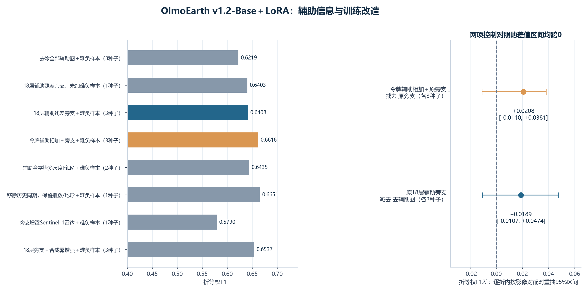
| 方法A | 方法B | 三折F1差 A−B | 配对95%区间 | 结论 |
|---|---|---|---|---|
| OlmoEarth v1.2 Base 双时相LoRA，编码器端辅助信息零初始化相加及后段旁支，难负采样 | OlmoEarth v1.2 Base 双时相LoRA，辅助信息后段旁支，难负采样 | 0.0208 | -0.0110—0.0381 | 区间跨0，当前样本不能确认差异 |
| OlmoEarth v1.2 Base 双时相LoRA，指数差/往年同期/地形后段旁支，难负采样 | OlmoEarth v1.2 Base 双时相LoRA，无辅助信息，难负采样 | 0.0189 | -0.0107—0.0474 | 区间跨0，当前样本不能确认差异 |
| D2LS ConvNeXt-Base RGB分割概率接梯度提升树，无额外辅助层 | D2LS ConvNeXt-Base 12波段经1×1卷积适配为RGB分割概率接梯度提升树，无额外辅助层 | 0.0360 | -0.0168—0.0658 | 区间跨0，当前样本不能确认差异 |
| D2LS ConvNeXt-Base RGB分割概率接梯度提升树，无额外辅助层 | D2LS ConvNeXt-Base第一层扩为12通道分割概率接梯度提升树，无额外辅助层 | 0.0286 | -0.0220—0.0694 | 区间跨0，当前样本不能确认差异 |
| 完整方法与实际改造 | 2023春夏 | 2023冬—2024春 | 2024年4月以后 | 三折等权F1 | 合并像元F1 | 重复含义 |
|---|---|---|---|---|---|---|
| D2LS–ConvNeXt-Base五类分割（RGB）＋交叉拟合概率＋直方图梯度提升树变化检测（去背景辅助层） | 0.7377 | 0.7585 | 0.5672 | 0.6878 | 0.6613 | 3次树训练；分割单种子 |
| D2LS–ConvNeXt-Base五类分割（12→3通道适配）＋交叉拟合概率＋直方图梯度提升树变化检测（去背景辅助层） | 0.6698 | 0.7339 | 0.5516 | 0.6518 | 0.6337 | 3次树训练；分割单种子 |
| D2LS–ConvNeXt-Base五类分割（12波段stem扩展）＋交叉拟合概率＋直方图梯度提升树变化检测（去背景辅助层） | 0.7701 | 0.7225 | 0.4851 | 0.6592 | 0.6199 | 3次树训练；分割单种子 |
RGB方案当前优于两种十二波段适配，但不能推出“十二波段没有信息”。预训练输入兼容、优化预算与新增通道初始化都影响结果。十二波段先压到三通道与扩展第一层是不同适配机制，报告不把它们合成同一组。下一轮应固定预算、配对多种子，再判断额外光谱是否被充分利用。
11 分割精度与多套参考对照
11.1 分割最优与变化检测最优不同
在统一地物参考上，SwinV2-Tiny U-Net256的三折等权mIoU约0.7379较高；变化检测主方案则选D2LS RGB概率接树分类器。分割mIoU衡量平均类别一致性，下游变化检测关心少量目标变化及其误报，两者不能直接互换排序。
下表将统一参考、历史学生参考和稀疏参考点分别报告。统一参考有全时序标签构建背景；历史标注有口径差异并曾参与少量诊断；稀疏点只代表少量位置。各自的数字说明不同证据，不能挑最高的一套当成最终验收精度。
| 五类分割模型完整名称 | 等权三折mIoU | 合并mIoU | 合并OA | 测试期数 |
|---|---|---|---|---|
| D2LS–ConvNeXt-Base五类分割（12→3通道适配） | 0.7116 | 0.7108 | 86.2% | 291 |
| D2LS–ConvNeXt-Base五类分割（RGB） | 0.6851 | 0.6803 | 85.3% | 291 |
| SwinV2-Tiny＋U-Net＋34层光学/辅助输入拼接五类分割 | 0.7060 | 0.7049 | 85.9% | 291 |
| SwinV2-Tiny＋U-Net＋34层输入的分组门控残差融合五类分割 | 0.7066 | 0.7050 | 85.9% | 291 |
| OlmoEarth v1.2-Base单期编码器＋LoRA＋上采样五类分割头（12波段） | 0.7024 | 0.6979 | 85.4% | 291 |
| Prithvi-EO-2.0-300M-TL 24层Transformer＋LoRA＋UPerNet五类分割（HLS六波段） | 0.6684 | 0.6705 | 83.8% | 291 |
| Prithvi-EO-2.0-600M-TL 32层Transformer＋LoRA＋UPerNet五类分割（HLS六波段） | 0.6760 | 0.6773 | 84.2% | 291 |
| SAM3.1 32层1024维视觉Transformer＋秩8 LoRA五类分割（RGB） | 0.5363 | 0.5448 | 76.6% | 291 |
| SAM3冻结32层1024维视觉Transformer＋五类分割头（RGB） | 0.4815 | 0.4854 | 72.6% | 291 |
| SAM3 32层1024维视觉Transformer＋秩8 LoRA五类分割（12波段适配） | 0.5439 | 0.5565 | 77.0% | 291 |
| SAM3 32层1024维视觉Transformer＋秩8 LoRA五类分割（RGB） | 0.5316 | 0.5417 | 76.4% | 291 |
| MiT-B2＋SegFormer五类分割（12波段） | 0.6667 | 0.6720 | 84.2% | 291 |
| SwinV2-Tiny＋U-Net五类分割（12波段，256尺度） | 0.7379 | 0.7242 | 87.2% | 291 |
| SwinV2-Tiny＋UPerNet五类分割（12波段，128尺度） | 0.6687 | 0.6667 | 83.7% | 291 |
| SwinV2-Tiny＋U-Net＋四帧历史质量/时间注意力五类分割 | 0.6977 | 0.6930 | 85.0% | 291 |
| ImageNet ResNet-34＋U-Net五类分割（12波段） | 0.7092 | 0.7032 | 85.8% | 291 |
| Satlas单期多光谱预训练ResNet-50＋U-Net五类分割（12波段） | 0.7113 | 0.7017 | 85.7% | 291 |
| SoftCon预训练ResNet-50＋U-Net五类分割（12波段） | 0.7198 | 0.7147 | 86.4% | 291 |
| SSL4EO-S12 MoCo预训练ResNet-50＋U-Net五类分割（12波段） | 0.7179 | 0.7109 | 86.2% | 291 |
| ImageNet ResNet-34＋U-Net++五类分割（12波段） | 0.7204 | 0.7158 | 86.5% | 291 |
| SegMAN-S小型编码器＋多尺度局部注意力/全局状态空间分割解码器（256尺度） | 0.6481 | 0.6461 | 82.8% | 291 |
| ConvNeXt-Tiny＋U-Net五类分割（12波段） | 0.7140 | 0.7044 | 86.1% | 291 |
| D2LS–ConvNeXt-Base十二通道输入层五类分割 | 0.7167 | 0.7168 | 86.4% | 291 |
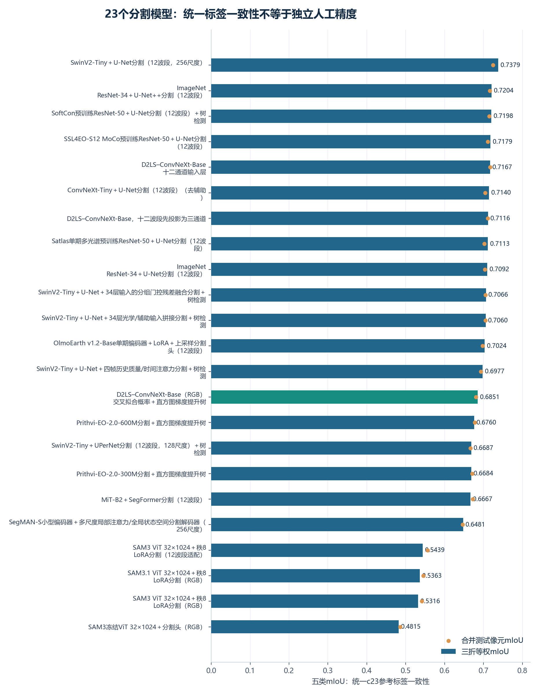
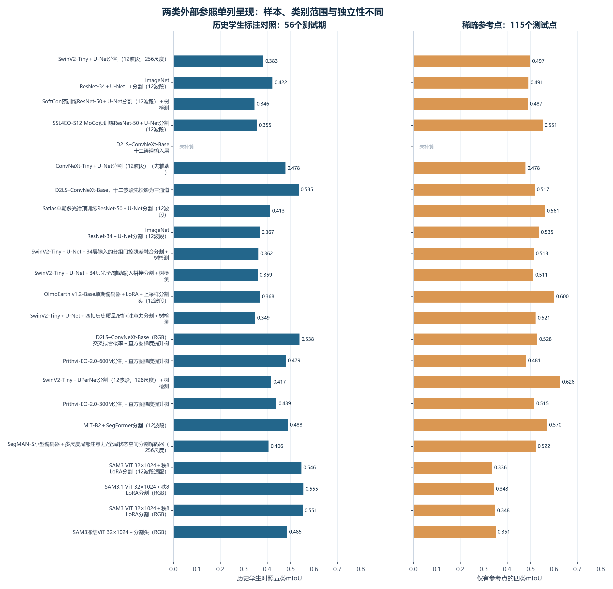
| 分割模型 | 历史学生参考mIoU | 历史学生参考OA | 稀疏点mIoU | 稀疏点OA |
|---|---|---|---|---|
| D2LS–ConvNeXt-Base五类分割（12→3通道适配） | 0.5346 | 74.1% | 0.5174 | 79.1% |
| D2LS–ConvNeXt-Base五类分割（RGB） | 0.5376 | 74.2% | 0.5277 | 79.1% |
| SwinV2-Tiny＋U-Net＋34层光学/辅助输入拼接五类分割 | 0.3587 | 59.3% | 0.5105 | 79.1% |
| SwinV2-Tiny＋U-Net＋34层输入的分组门控残差融合五类分割 | 0.3621 | 59.6% | 0.5133 | 80.0% |
| OlmoEarth v1.2-Base单期编码器＋LoRA＋上采样五类分割头（12波段） | 0.3682 | 59.3% | 0.6000 | 83.5% |
| Prithvi-EO-2.0-300M-TL 24层Transformer＋LoRA＋UPerNet五类分割（HLS六波段） | 0.4392 | 65.7% | 0.5149 | 80.0% |
| Prithvi-EO-2.0-600M-TL 32层Transformer＋LoRA＋UPerNet五类分割（HLS六波段） | 0.4791 | 69.9% | 0.4807 | 78.3% |
| SAM3.1 32层1024维视觉Transformer＋秩8 LoRA五类分割（RGB） | 0.5547 | 74.9% | 0.3433 | 54.8% |
| SAM3冻结32层1024维视觉Transformer＋五类分割头（RGB） | 0.4850 | 69.1% | 0.3505 | 60.0% |
| SAM3 32层1024维视觉Transformer＋秩8 LoRA五类分割（12波段适配） | 0.5460 | 74.4% | 0.3359 | 60.0% |
| SAM3 32层1024维视觉Transformer＋秩8 LoRA五类分割（RGB） | 0.5509 | 74.7% | 0.3481 | 54.8% |
| MiT-B2＋SegFormer五类分割（12波段） | 0.4880 | 69.4% | 0.5699 | 80.9% |
| SwinV2-Tiny＋U-Net五类分割（12波段，256尺度） | 0.3833 | 60.1% | 0.4972 | 81.7% |
| SwinV2-Tiny＋UPerNet五类分割（12波段，128尺度） | 0.4174 | 64.5% | 0.6259 | 84.3% |
| SwinV2-Tiny＋U-Net＋四帧历史质量/时间注意力五类分割 | 0.3486 | 57.9% | 0.5213 | 78.3% |
| ImageNet ResNet-34＋U-Net五类分割（12波段） | 0.3672 | 59.7% | 0.5346 | 82.6% |
| Satlas单期多光谱预训练ResNet-50＋U-Net五类分割（12波段） | 0.4125 | 63.6% | 0.5605 | 82.6% |
| SoftCon预训练ResNet-50＋U-Net五类分割（12波段） | 0.3461 | 57.1% | 0.4874 | 77.4% |
| SSL4EO-S12 MoCo预训练ResNet-50＋U-Net五类分割（12波段） | 0.3550 | 58.0% | 0.5510 | 80.9% |
| ImageNet ResNet-34＋U-Net++五类分割（12波段） | 0.4223 | 64.9% | 0.4909 | 80.0% |
| SegMAN-S小型编码器＋多尺度局部注意力/全局状态空间分割解码器（256尺度） | 0.4059 | 62.3% | 0.5216 | 78.3% |
| ConvNeXt-Tiny＋U-Net五类分割（12波段） | 0.4778 | 69.5% | 0.4778 | 80.0% |
| 分割模型 | 水体IoU | 植被IoU | 耕地IoU | 裸露IoU | 建成IoU |
|---|---|---|---|---|---|
| D2LS–ConvNeXt-Base五类分割（12→3通道适配） | 0.7788 | 0.8345 | 0.7235 | 0.6395 | 0.5775 |
| D2LS–ConvNeXt-Base五类分割（RGB） | 0.6813 | 0.8216 | 0.7183 | 0.6318 | 0.5484 |
| SwinV2-Tiny＋U-Net＋34层光学/辅助输入拼接五类分割 | 0.7748 | 0.8296 | 0.7387 | 0.6233 | 0.5580 |
| SwinV2-Tiny＋U-Net＋34层输入的分组门控残差融合五类分割 | 0.7840 | 0.8320 | 0.7378 | 0.6234 | 0.5477 |
| OlmoEarth v1.2-Base单期编码器＋LoRA＋上采样五类分割头（12波段） | 0.7756 | 0.8261 | 0.7202 | 0.6203 | 0.5475 |
| Prithvi-EO-2.0-300M-TL 24层Transformer＋LoRA＋UPerNet五类分割（HLS六波段） | 0.7470 | 0.8013 | 0.7098 | 0.5980 | 0.4967 |
| Prithvi-EO-2.0-600M-TL 32层Transformer＋LoRA＋UPerNet五类分割（HLS六波段） | 0.7608 | 0.8081 | 0.7172 | 0.5937 | 0.5068 |
| SAM3.1 32层1024维视觉Transformer＋秩8 LoRA五类分割（RGB） | 0.5094 | 0.7193 | 0.6382 | 0.4926 | 0.3644 |
| SAM3冻结32层1024维视觉Transformer＋五类分割头（RGB） | 0.3991 | 0.6694 | 0.5339 | 0.4594 | 0.3650 |
| SAM3 32层1024维视觉Transformer＋秩8 LoRA五类分割（12波段适配） | 0.5582 | 0.7239 | 0.6371 | 0.4955 | 0.3680 |
| SAM3 32层1024维视觉Transformer＋秩8 LoRA五类分割（RGB） | 0.5044 | 0.7165 | 0.6339 | 0.4937 | 0.3602 |
| MiT-B2＋SegFormer五类分割（12波段） | 0.7242 | 0.8051 | 0.7152 | 0.6054 | 0.5102 |
| SwinV2-Tiny＋U-Net五类分割（12波段，256尺度） | 0.7958 | 0.8451 | 0.7773 | 0.6439 | 0.5590 |
| SwinV2-Tiny＋UPerNet五类分割（12波段，128尺度） | 0.7306 | 0.7986 | 0.7091 | 0.5977 | 0.4974 |
| SwinV2-Tiny＋U-Net＋四帧历史质量/时间注意力五类分割 | 0.7671 | 0.8178 | 0.7093 | 0.6146 | 0.5561 |
| ImageNet ResNet-34＋U-Net五类分割（12波段） | 0.7885 | 0.8298 | 0.7268 | 0.6312 | 0.5397 |
| Satlas单期多光谱预训练ResNet-50＋U-Net五类分割（12波段） | 0.7886 | 0.8293 | 0.7280 | 0.6268 | 0.5360 |
| SoftCon预训练ResNet-50＋U-Net五类分割（12波段） | 0.7938 | 0.8350 | 0.7404 | 0.6377 | 0.5665 |
| SSL4EO-S12 MoCo预训练ResNet-50＋U-Net五类分割（12波段） | 0.7911 | 0.8344 | 0.7369 | 0.6354 | 0.5564 |
| ImageNet ResNet-34＋U-Net++五类分割（12波段） | 0.7978 | 0.8367 | 0.7432 | 0.6396 | 0.5620 |
| SegMAN-S小型编码器＋多尺度局部注意力/全局状态空间分割解码器（256尺度） | 0.6880 | 0.7831 | 0.7318 | 0.5758 | 0.4519 |
| ConvNeXt-Tiny＋U-Net五类分割（12波段） | 0.7821 | 0.8332 | 0.7374 | 0.6335 | 0.5356 |
12 像元、事件、类型与困难条件
12.1 像元与事件需要同时看
直接OlmoEarth旁支方案的事件检出率高于D2LS RGB后检测，但误报片占比也较高。分割后检测当前像元F1更高，并不意味着发现了更多独立参考变化斑块。事件指标需与误报负担并列，避免靠大面积报出来提高检出。
| 方法 | 事件检出率 | 检出事件均数 | 参考事件数 | 误报片占比 | 报出片均数 | 误报片均数 |
|---|---|---|---|---|---|---|
| D2LS–ConvNeXt-Base五类分割（RGB）＋交叉拟合概率＋直方图梯度提升树变化检测（去背景辅助层） | 51.4% | 72.0 | 140 | 42.0% | 149.0 | 62.7 |
| OlmoEarth v1.2-Base＋LoRA双时相联合编码变化检测＋18层指数/历史/地形零初始化残差旁支＋难负样本训练 | 63.6% | 89.0 | 140 | 56.1% | 256.3 | 157.3 |
| OlmoEarth v1.2-Base＋LoRA＋输入令牌级18层辅助嵌入相加＋18层指数/历史/地形零初始化残差旁支＋难负样本训练 | 64.0% | 89.7 | 140 | 52.4% | 215.3 | 113.3 |
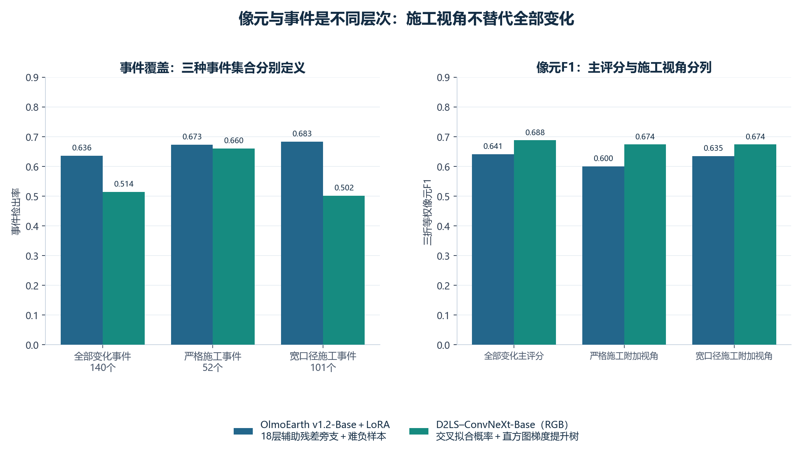
| 评价范围 | 完整方法要点 | P | R | F1 |
|---|---|---|---|---|
| 衡阳北 | D2LS–ConvNeXt-Base五类分割（RGB）＋交叉拟合概率＋直方图梯度提升树变化检测（去背景辅助层） | 0.7217 | 0.6809 | 0.7007 |
| 衡阳北 | OlmoEarth v1.2-Base＋LoRA双时相联合编码变化检测＋18层指数/历史/地形零初始化残差旁支＋难负样本训练 | 0.5965 | 0.6721 | 0.6288 |
| 衡阳北 | OlmoEarth v1.2-Base＋LoRA＋输入令牌级18层辅助嵌入相加＋18层指数/历史/地形零初始化残差旁支＋难负样本训练 | 0.6620 | 0.7003 | 0.6803 |
| 韶关南 | D2LS–ConvNeXt-Base五类分割（RGB）＋交叉拟合概率＋直方图梯度提升树变化检测（去背景辅助层） | 0.6675 | 0.6836 | 0.6752 |
| 韶关南 | OlmoEarth v1.2-Base＋LoRA双时相联合编码变化检测＋18层指数/历史/地形零初始化残差旁支＋难负样本训练 | 0.5163 | 0.4568 | 0.4512 |
| 韶关南 | OlmoEarth v1.2-Base＋LoRA＋输入令牌级18层辅助嵌入相加＋18层指数/历史/地形零初始化残差旁支＋难负样本训练 | 0.3804 | 0.4821 | 0.4222 |
| 株洲南 | D2LS–ConvNeXt-Base五类分割（RGB）＋交叉拟合概率＋直方图梯度提升树变化检测（去背景辅助层） | 0.8448 | 0.3490 | 0.4928 |
| 株洲南 | OlmoEarth v1.2-Base＋LoRA双时相联合编码变化检测＋18层指数/历史/地形零初始化残差旁支＋难负样本训练 | 0.5699 | 0.6410 | 0.5901 |
| 株洲南 | OlmoEarth v1.2-Base＋LoRA＋输入令牌级18层辅助嵌入相加＋18层指数/历史/地形零初始化残差旁支＋难负样本训练 | 0.6229 | 0.6434 | 0.6290 |
| 评价范围 | 完整方法要点 | 变化格 | P | R | F1 |
|---|---|---|---|---|---|
| 有雾 | D2LS–ConvNeXt-Base五类分割（RGB）＋交叉拟合概率＋直方图梯度提升树变化检测（去背景辅助层） | 1765 | 0.6748 | 0.6625 | 0.6684 |
| 有雾 | OlmoEarth v1.2-Base＋LoRA双时相联合编码变化检测＋18层指数/历史/地形零初始化残差旁支＋难负样本训练 | 1765 | 0.3966 | 0.6695 | 0.4917 |
| 有雾 | OlmoEarth v1.2-Base＋LoRA＋输入令牌级18层辅助嵌入相加＋18层指数/历史/地形零初始化残差旁支＋难负样本训练 | 1765 | 0.4267 | 0.6676 | 0.5190 |
| 清楚 | D2LS–ConvNeXt-Base五类分割（RGB）＋交叉拟合概率＋直方图梯度提升树变化检测（去背景辅助层） | 5407 | 0.7407 | 0.5934 | 0.6588 |
| 清楚 | OlmoEarth v1.2-Base＋LoRA双时相联合编码变化检测＋18层指数/历史/地形零初始化残差旁支＋难负样本训练 | 5407 | 0.6698 | 0.6092 | 0.6265 |
| 清楚 | OlmoEarth v1.2-Base＋LoRA＋输入令牌级18层辅助嵌入相加＋18层指数/历史/地形零初始化残差旁支＋难负样本训练 | 5407 | 0.6787 | 0.6391 | 0.6576 |
| 评价范围 | 完整方法要点 | 变化格 | P | R | F1 |
|---|---|---|---|---|---|
| 河岸带内 | D2LS–ConvNeXt-Base五类分割（RGB）＋交叉拟合概率＋直方图梯度提升树变化检测（去背景辅助层） | 1636 | 0.6487 | 0.5094 | 0.5703 |
| 河岸带内 | OlmoEarth v1.2-Base＋LoRA双时相联合编码变化检测＋18层指数/历史/地形零初始化残差旁支＋难负样本训练 | 1636 | 0.4554 | 0.4370 | 0.4241 |
| 河岸带内 | OlmoEarth v1.2-Base＋LoRA＋输入令牌级18层辅助嵌入相加＋18层指数/历史/地形零初始化残差旁支＋难负样本训练 | 1636 | 0.3810 | 0.4586 | 0.4125 |
| 河岸带外 | D2LS–ConvNeXt-Base五类分割（RGB）＋交叉拟合概率＋直方图梯度提升树变化检测（去背景辅助层） | 5536 | 0.7415 | 0.6402 | 0.6871 |
| 河岸带外 | OlmoEarth v1.2-Base＋LoRA双时相联合编码变化检测＋18层指数/历史/地形零初始化残差旁支＋难负样本训练 | 5536 | 0.5987 | 0.6793 | 0.6301 |
| 河岸带外 | OlmoEarth v1.2-Base＋LoRA＋输入令牌级18层辅助嵌入相加＋18层指数/历史/地形零初始化残差旁支＋难负样本训练 | 5536 | 0.6615 | 0.7015 | 0.6805 |
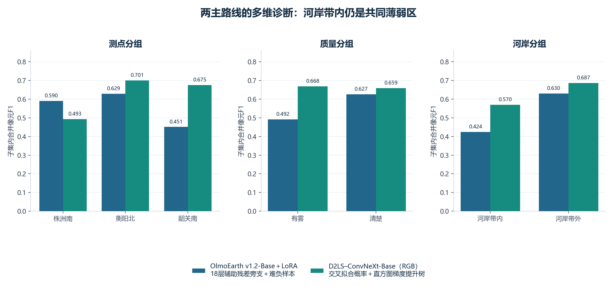
| 变化类型 | 参考变化像元 | D2LS–ConvNeXt-Base RGB＋树 | OlmoEarth LoRA后段旁支 | OlmoEarth LoRA输入辅助相加 |
|---|---|---|---|---|
| 新增裸露 | 5407 | 64.7% | 66.6% | 69.4% |
| 新增建筑 | 155 | 0.0% | 0.0% | 0.0% |
| 新增/扩展道路 | 383 | 43.4% | 72.4% | 70.5% |
| 植被减少 | 1457 | 40.4% | 68.3% | 68.8% |
| 水域增加 | 572 | 62.6% | 47.8% | 43.6% |
| 水域减少 | 617 | 42.0% | 51.8% | 57.4% |
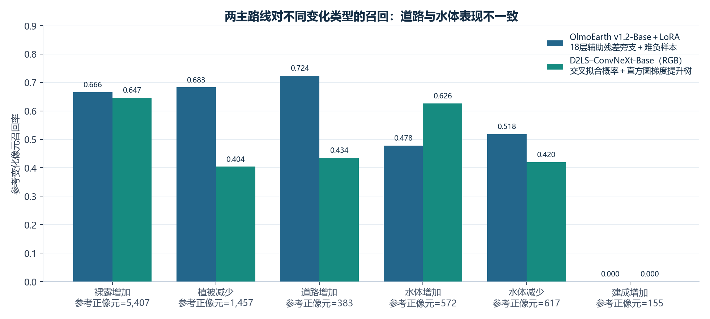
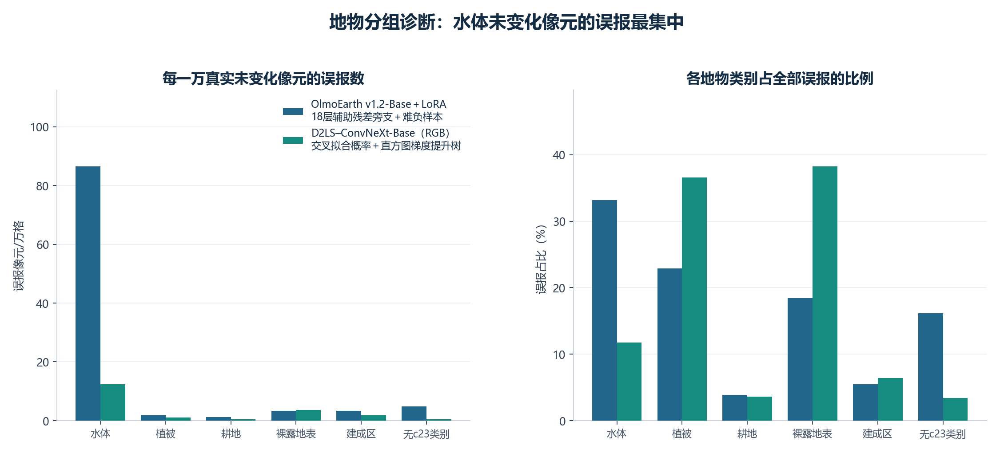
| 背景地物 | 方法 | 不变像元 | 误报像元均数 | 全部误报中的占比 | 该类不变像元误报率 |
|---|---|---|---|---|---|
| 建成 | D2LS–ConvNeXt-Base五类分割（RGB）＋交叉拟合概率＋直方图梯度提升树变化检测（去背景辅助层） | 593357 | 108.3 | 6.4% | 0.018% |
| 建成 | OlmoEarth v1.2-Base＋LoRA双时相联合编码变化检测＋18层指数/历史/地形零初始化残差旁支＋难负样本训练 | 593357 | 196.0 | 5.4% | 0.033% |
| 无 c23 | D2LS–ConvNeXt-Base五类分割（RGB）＋交叉拟合概率＋直方图梯度提升树变化检测（去背景辅助层） | 1146837 | 58.0 | 3.4% | 0.005% |
| 无 c23 | OlmoEarth v1.2-Base＋LoRA双时相联合编码变化检测＋18层指数/历史/地形零初始化残差旁支＋难负样本训练 | 1146837 | 547.3 | 16.2% | 0.048% |
| 植被 | D2LS–ConvNeXt-Base五类分割（RGB）＋交叉拟合概率＋直方图梯度提升树变化检测（去背景辅助层） | 5590860 | 617.7 | 36.6% | 0.011% |
| 植被 | OlmoEarth v1.2-Base＋LoRA双时相联合编码变化检测＋18层指数/历史/地形零初始化残差旁支＋难负样本训练 | 5590860 | 1009.3 | 22.9% | 0.018% |
| 水体 | D2LS–ConvNeXt-Base五类分割（RGB）＋交叉拟合概率＋直方图梯度提升树变化检测（去背景辅助层） | 160364 | 198.7 | 11.7% | 0.124% |
| 水体 | OlmoEarth v1.2-Base＋LoRA双时相联合编码变化检测＋18层指数/历史/地形零初始化残差旁支＋难负样本训练 | 160364 | 1388.0 | 33.2% | 0.866% |
| 耕地 | D2LS–ConvNeXt-Base五类分割（RGB）＋交叉拟合概率＋直方图梯度提升树变化检测（去背景辅助层） | 1514840 | 60.7 | 3.6% | 0.004% |
| 耕地 | OlmoEarth v1.2-Base＋LoRA双时相联合编码变化检测＋18层指数/历史/地形零初始化残差旁支＋难负样本训练 | 1514840 | 179.7 | 3.9% | 0.012% |
| 裸露 | D2LS–ConvNeXt-Base五类分割（RGB）＋交叉拟合概率＋直方图梯度提升树变化检测（去背景辅助层） | 1754971 | 645.3 | 38.3% | 0.037% |
| 裸露 | OlmoEarth v1.2-Base＋LoRA双时相联合编码变化检测＋18层指数/历史/地形零初始化残差旁支＋难负样本训练 | 1754971 | 590.7 | 18.4% | 0.034% |
| 方法 | 严格施工等权F1 | 严格施工合并F1 | 施工事件检出率 | 施工误报片占比 |
|---|---|---|---|---|
| D2LS–ConvNeXt-Base五类分割（RGB）＋交叉拟合概率＋直方图梯度提升树变化检测（去背景辅助层） | 0.6736 | 0.6759 | 66.0% | 62.2% |
| OlmoEarth v1.2-Base＋LoRA双时相联合编码变化检测＋18层指数/历史/地形零初始化残差旁支＋难负样本训练 | 0.6000 | 0.5263 | 67.3% | 75.0% |
| OlmoEarth v1.2-Base＋LoRA＋输入令牌级18层辅助嵌入相加＋18层指数/历史/地形零初始化残差旁支＋难负样本训练 | 0.6138 | 0.5612 | 67.9% | 73.9% |
有雾子集的F1不一定低于清楚子集，因为两者的变化面积、站点与类型分布不同；不能据两个合并数认定“雾提升效果”或“模型已抗雾”。河岸带内外同理，需要固定同一批事件、匹配场景或受控合成雾试验才能进一步归因。
13 变化高亮、成功案例与误差诊断
13.1 衡阳北2023年施工区域：在原图上指出变化
重点展示2023年施工区域的前后期影像，并在图上叠加参考变化轮廓与局部放大。高亮区域来自固定参考标注，模型输出单独显示；颜色帮助定位，不改变影像、标签或评分。
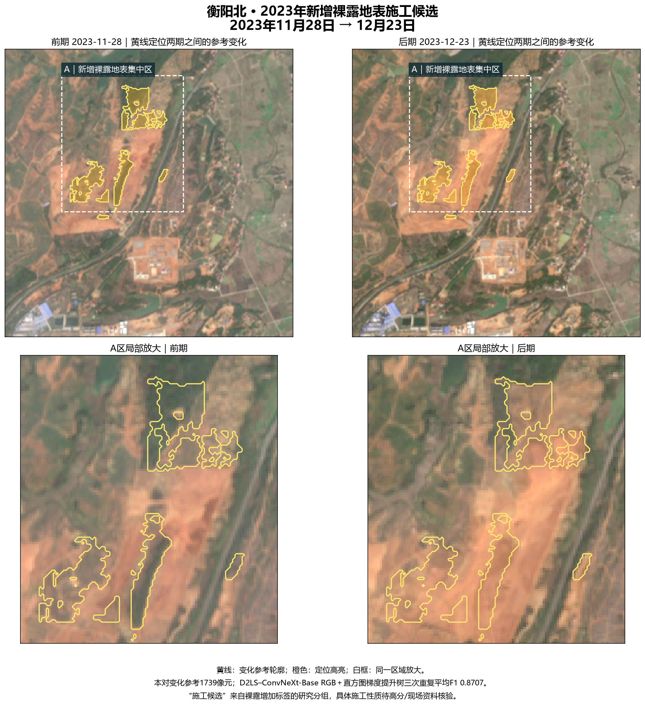
13.2 成功与失败放在同一套图例中
下面8组案例包括可检出的变化、两条路线误报/漏报较多的影像对和河岸困难样本。使用预先固定的首个注册种子展示，不按单幅效果挑选训练种子；主表仍报告所有注册重复。每幅预测的TP、FP、FN已与正式逐对记录核对。
绿色为正确检出，红色为误报，黄色为漏报，灰色为不参评。图中的灰色区域不参与混淆统计；可见光显示使用两期共同反射率窗口。图像解释是核验假设，真正的漏标、施工起止和水位原因还需要独立证据。
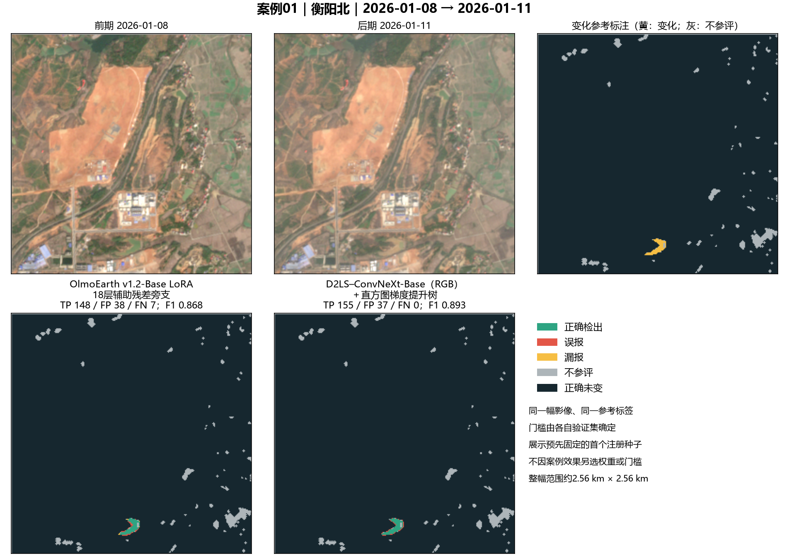
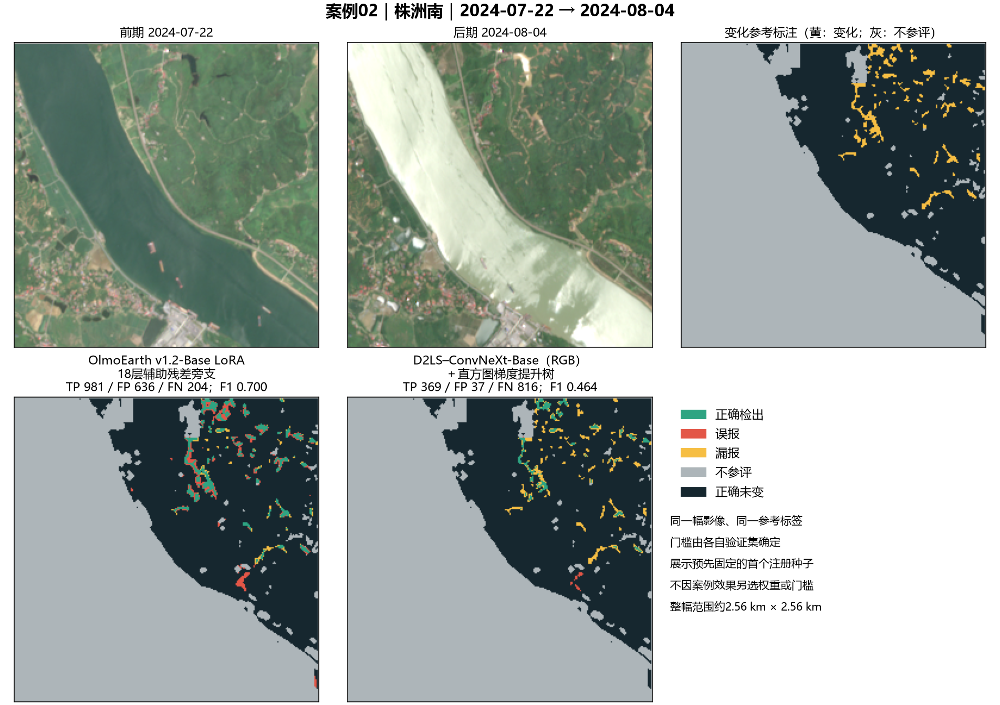
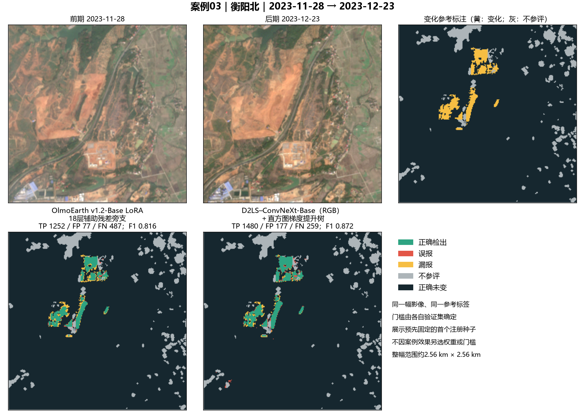
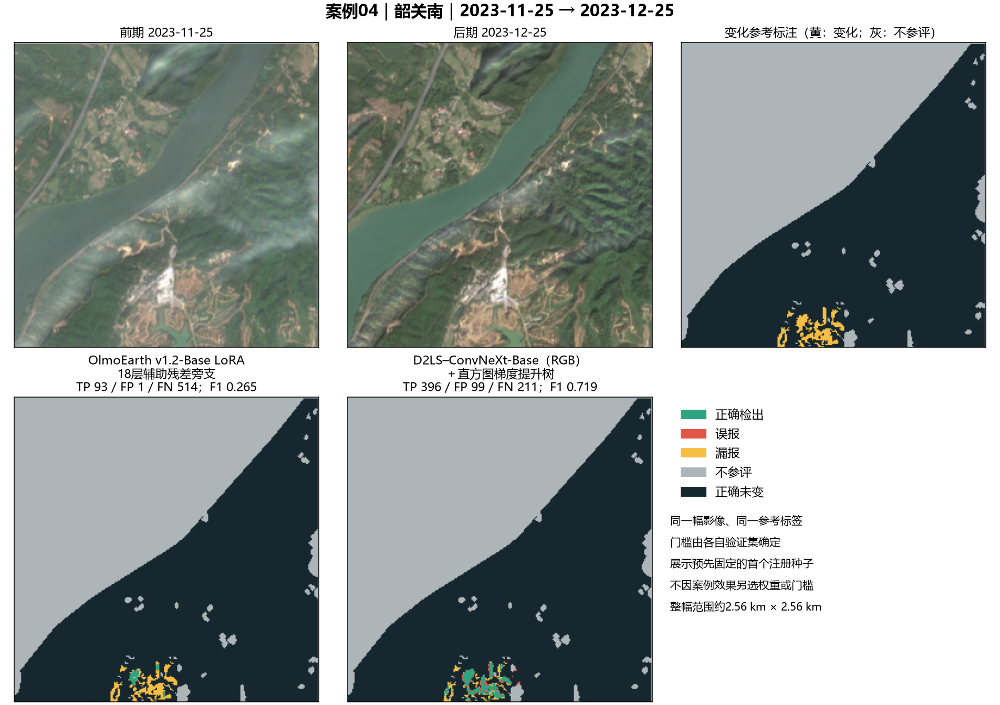
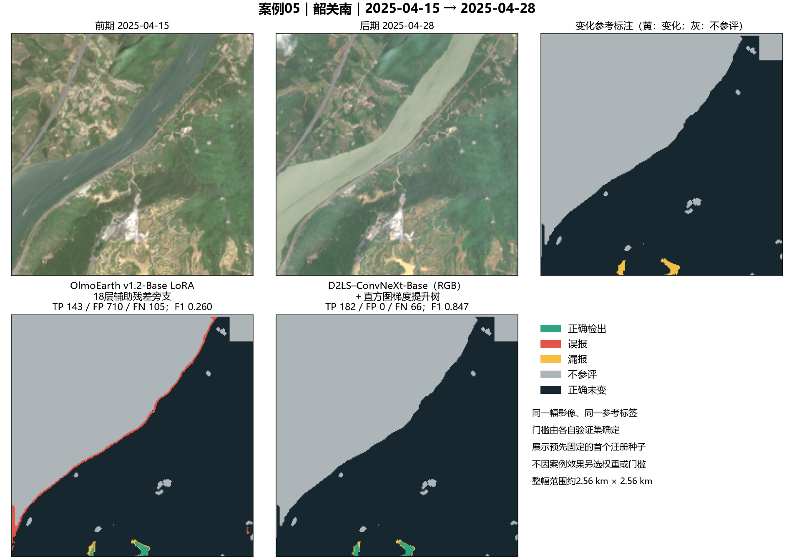
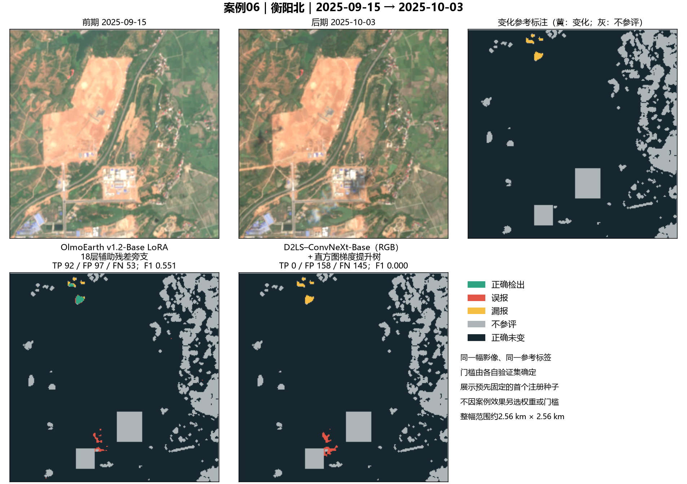
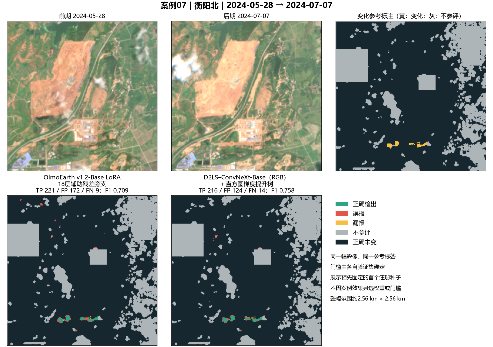
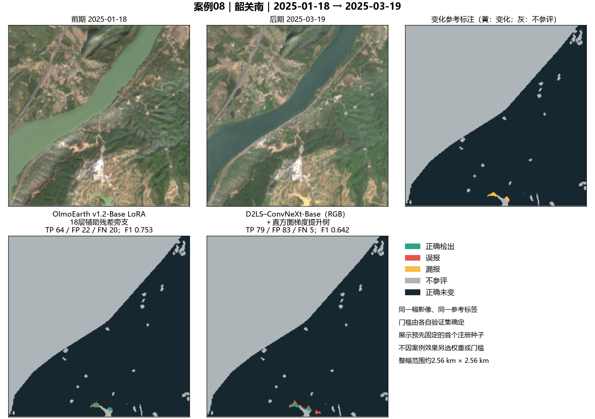
| 错误机制候选 | 可见表现 | 解释 | 可验证改进 |
|---|---|---|---|
| 地物类别不翻转 | 同为裸露或建成，纹理/范围发生变化 | 两张硬分类图相同仍可能是真变化 | 保留光谱、连续概率及邻域特征；按同类变化分层核验 |
| 水位与水边混合像元 | 沿岸细条误报、漏报与位置摆动 | 水域状态与固定河岸形态混在一起 | 同水位时段、高分近同期、雷达与水位记录互证 |
| 薄雾/阴影与辐射差 | 大范围亮度/颜色变化 | 场景条件差异可能被学成变化 | 质量掩膜、配对归一化、受控雾增强与真实雾分层 |
| 长时间测试漂移 | 长期折F1下降、种子波动 | 季节、后续施工与阈值迁移同时变化 | 增加历史覆盖与外部验证，阈值适应只用开发资料 |
| 小目标与细线 | 少量像元目标未检出或边界粗糙 | 10米空间混合，特征下采样 | 高分核验可见下限；边界损失需另行受控验证 |
| 参考标签遗漏/定义差异 | 模型报出但当前参考无变化 | 不一定全是模型错误 | 固定标签后独立复核，再建立新版本而非原测试就地调分 |
14 与已有10米级研究怎样比较
14.1 公开10米基准提供什么参照
ONERA Satellite Change Detection（OSCD）包含24个Sentinel-2城市影像对，推荐14对训练、10对测试。Daudt等的全卷积早融合、孪生拼接与孪生差分是可以复现的经典直接检测框架。其13波段结果变化类F1为0.5136—0.5792；数据与原表见原论文表1。
SeaMo论文在OSCD上报告多季节、多模态预训练表示的微调对照，采用128像元裁块、50%重叠等设置；报告的SeaMo ViT-B F1为0.5454。它是文献背景，未在本项目重新训练成同协议结果。原论文表5与实验设置
14.2 数字不能跨数据集排冠军
本项目是三个固定铁路样区的时间外推，包含短间隔、稀疏变化、同类内部扰动、水位和雾条件；OSCD主要是城市建设及不同城市划分。地理泛化、正样本组成、标签与阈值协议不同。因此本项目0.6878与文献0.5454不能相减当作改进幅度，也不能写成超过公开方法。真正的模型比较应看本项目同数据同口径的完整表。
| 论文与数据 | 方法完整名称 | 输入/骨干 | 变化F1 | 可比边界 |
|---|---|---|---|---|
| Daudt等，OSCD | 全卷积早融合网络 | RGB | 0.4889 | 经典框架；不同数据 |
| Daudt等，OSCD | 全卷积孪生拼接网络 | RGB | 0.452 | 同论文协议 |
| Daudt等，OSCD | 全卷积孪生差分网络 | RGB | 0.4886 | 同论文协议 |
| Daudt等，OSCD | 全卷积早融合网络 | 13波段 | 0.5691 | 同论文协议 |
| Daudt等，OSCD | 全卷积孪生拼接网络 | 13波段 | 0.5136 | 同论文协议 |
| Daudt等，OSCD | 全卷积孪生差分网络 | 13波段 | 0.5792 | 同论文协议 |
| SeaMo，OSCD | SatMAE掩膜预训练 | ViT-Base | 0.5276 | 沿用该论文微调协议 |
| SeaMo，OSCD | SpectralGPT光谱预训练 | ViT-Base | 0.5429 | 同论文协议 |
| SeaMo，OSCD | SeaMo多季节多模态预训练 | ViT-Base | 0.5454 | 同论文协议 |
| 本项目，铁路时间测试 | D2LS–ConvNeXt-Base RGB分割＋直方图梯度提升树 | 分割概率＋光谱/邻域 | 0.6878 | 三折等权；不能跨库排位 |
| 维度 | OSCD文献 | 本项目 |
|---|---|---|
| 观测对象 | 城市建设变化 | 铁路沿线地表扰动、水域状态等 |
| 划分 | 14城市影像对训练、10对测试 | 三个已有样区的滚动时间测试 |
| 空间分辨率 | Sentinel-2各波段10/20/60米 | 统一10米格网；原生低分辨率信息不增加 |
| 主统计量 | 文献各自协议的测试变化F1 | 每折F1等权，再平均注册重复 |
| 训练与测试地域 | 含未见城市 | 本次未完成未知样区外推 |
| 结论用途 | 了解同尺度任务、框架与优化难点 | 选择本项目可复现基线与核验方案 |
15 高分辨率核验与影像采购方案
15.1 高分影像要解决三类具体问题
高分辨率影像首先用于核验标签。10米上难以确认的窄条、点状、混合像元和水陆边缘，需要更精细的空间证据，才能区分真实变化、季节状态和标注遗漏。其次用于核验模型误报：模型与已有标签不一致，并不自动意味着模型错了；其中一部分可能是标签没有记录的真实变化。第三类任务是量化10米尺度的观测下限，确定哪些对象在更高分辨率下清楚、在10米下却难以稳定检出。
变化核验要求前后两期共同构成证据。只有一张后图，通常只能回答“拍摄时是什么地物”，无法确认变化发生在目标影像对的时间段内。若高分日期与Sentinel-2相差数周，还要检查两者之间是否发生了其他变化。岸线核验的时间要求更严格，因为瞬时水位变化可能大于希望量测的岸线位移。
15.2 景拟购目录的实际构成
现有目录来自一次存档筛选，目标是兼顾变化前后核实和季度参考影像。筛选条件包括完整覆盖样区、云量和侧摆要求、产品质量等级，以及拍摄日期。目录选择了0.5米和约0.75—0.8米两类产品；产品名称中的分辨率仍须在交付前逐波段核对，区分原生分辨率与融合后输出分辨率。
| 样区 | 拟购景数 | 0.5米产品 | 亚米产品 | 不同拍摄日期数 | 已覆盖目标季度 | 目录日期范围 |
|---|---|---|---|---|---|---|
| 株洲南 | 26 | 15 | 11 | 26 | 17/20 | 2022-04-03—2026-06-01 |
| 衡阳北 | 42 | 24 | 18 | 42 | 20/20 | 2021-09-24—2026-06-17 |
| 韶关南 | 25 | 17 | 8 | 24 | 16/20 | 2021-07-23—2026-05-01 |
| 合计 | 93 | 56 | 37 | 92个测点日期 | 53/60 | 2021—2026年 |
这里的“景数”“测点日期数”和“影像对数”是三个概念。韶关南有两景拍摄于同一天，因此93景对应92个测点日期；它们也不等于93组双时相变化核验对。目标时段为2021年第3季度至2026年第2季度，三个样区共60个测点季度，当前目录覆盖53个。缺少的季度为株洲南2021年第3、4季度和2022年第1季度；韶关南2021年第4季度、2022年第1、4季度及2024年第2季度。不能把“尽可能季度覆盖”的选片目标写成已经实现季度全覆盖。
本目录应表述为拟购清单。当前材料没有这93景已经完成付款和到货的凭证。采购数量与产品方案可以用于讨论，费用应按最新存档、授权范围和交付要求重新询价，不把历史账号报价当作当前有效承诺。商城和产品信息以吉林一号官方遥感商城资源中心及实际订单确认文件为准。
15.3 按两条常规路线重新排列核验优先级
高分核验既要覆盖检出较好的施工变化，也要覆盖误报、漏报和河岸困难样本。本次从两条常规路线的冻结结果中选择8个代表影像对：直接路线采用OlmoEarth LoRA、18层旁支与难负样本；先分割后检测采用D2LS RGB与直方图梯度提升树。衡阳北2023-11-28→2023-12-23作为重点施工核验案例，其他日期分别补充不同错误与成像条件。两条路线分别保留自身结果，不以复杂多模型融合的分数替代。
下表给出各案例对应方法的误报和漏报计数，均为三个登记种子的算术平均，因此可能出现小数，并非一张预测图中的小数像元。前侧候选须位于目标前期日前0—45天，后侧候选须位于目标后期日后0—45天。该清单用于冻结后的诊断核验和采购排序，不参与模型或阈值选择，也不代表工程风险等级。
| 优先核验对象 | 常规路线 | Sentinel-2前期→后期 | 误报/漏报像元（三种子均值） | 目录内可用前景 | 目录内可用后景 | 双侧45天内覆盖 |
|---|---|---|---|---|---|---|
| 衡阳北，成片变化检出 | 分割后检测 | 2026-01-08→2026-01-11 | 32.7/0.3 | 2026-01-07 | 缺 | 缺后侧 |
| 株洲南，较多漏报 | 分割后检测 | 2024-07-22→2024-08-04 | 41.7/777.0 | 2024-07-06 | 2024-08-04 | 有 |
| 衡阳北，重点施工变化 | 分割后检测 | 2023-11-28→2023-12-23 | 176.7/262.0 | 2023-11-20 | 缺 | 缺后侧 |
| 韶关南，含水边变化的漏报 | 分割后检测 | 2023-11-25→2023-12-25 | 98.0/220.7 | 2023-11-25 | 2023-12-26 | 有 |
| 韶关南，有雾误报 | 直接检测 | 2025-04-15→2025-04-28 | 265.7/107.7 | 2025-04-02 | 2025-04-29 | 有 |
| 衡阳北，误报漏报同时较多 | 分割后检测 | 2025-09-15→2025-10-03 | 160.3/145.0 | 2025-08-01 | 2025-10-10 | 有 |
| 衡阳北，较多误报 | 分割后检测 | 2024-05-28→2024-07-07 | 129.0/13.7 | 2024-05-24 | 2024-07-21 | 有 |
| 韶关南，河岸带困难案例 | 分割后检测 | 2025-01-18→2025-03-19 | 77.0/8.0 | 2025-01-12 | 2025-04-02 | 有 |
这8对需要16个前后侧别期位，现目录覆盖其中14个期位，尚缺2个，6/8对两侧齐备。相邻核验任务的窗口可能重叠，一景高分可能同时服务两个任务，因此最终需补的独立景数，应在查到实际存档后去重，不能把期位数直接当作订单景数。衡阳北重点施工案例目前缺后侧候选，需优先补查。特别是“目录内有两景”只说明时间上具备候选，不证明该影像对已经具备合格真值：还要检查目标区域内云影、视角、配准，以及两种传感器之间是否有新增变化。
15.4 河岸核验是另一组日期需求
河岸水边线应优先采用同日高分；若放宽至48小时，需要水位资料证明观测期间水位相近。当前93景目录是按变化核实和季度覆盖挑选的，四个岸线目标都没有48小时内的选中景。
| 样区 | 目标水面状态 | Sentinel-2目标日期 | 当前目录是否满足同日/48小时 | 后续动作 |
|---|---|---|---|---|
| 株洲南 | 窄水面 | 2024-10-03 | 不满足 | 查询近同日原生亚米存档，核对同期水位 |
| 株洲南 | 宽水面 | 2023-01-07 | 不满足 | 单独查询该水位状态的近同日资料 |
| 韶关南 | 窄水面 | 2024-11-29 | 不满足 | 同时检查低太阳高度与坡面阴影 |
| 韶关南 | 宽水面 | 2022-10-26 | 不满足 | 核对研究段水位和目标区域清晰度 |
这四个目标加上前述8个变化核验对，形成20个侧别或近同期核验期位。它们是第一批应优先核实的科学需求，不是20景已确认可买的影像。建议先补查缺侧和岸线日期，再决定是否替换93景目录中部分重复季度参考景，最后形成可支付、可验收的订单。这样能把采购从“影像越多越好”转为“每景对应一个明确待回答的问题”。
15.5 核验实验怎样实施
核验分为诊断批和随机审计批。诊断批使用上表的成功与困难样本，既核验重点施工变化，也查清较多漏报、误报、水边混合像元和有雾伪变化的成因。随机审计批从其余影像对中按样区、变化规模、地物类型和成像质量分层抽样，避免错误集中的样本代表全部数据。专业判读时先隐藏模型预测和原标签，独立判定高分前后是否存在目标变化，再与原标签和模型输出对照。
每一块核验区域记录“确认变化、确认无变化、无法判定”及原因，同时记录真实变化面积、是否发生在同一地物类别内部，以及与Sentinel-2日期间是否存在额外变化。无法判定的样本保留为不确定，不强行归入模型正确或错误。核验可以得到标签遗漏比例、原误报中的真变化比例、不同尺度的检出率和边界偏差。
跨尺度比较应使用同一地面范围。将高分变化区域与10米网格做面积叠加，计算每个10米像元内的变化面积比例，而不是简单把高分硬标签缩成一张图。对标称0.5米产品，一个10米方格内约有20×20个输出像元；对于其他分辨率或有旋转的网格，应按面积求交。未来若用这些比例训练软标签模型，需要另开一轮冻结实验，本轮原测试成绩仍保持原记录。
15.6 产品验收与交付要求
| 验收项目 | 需要供应方逐景提供或本地核对的内容 | 不满足时的处理 |
|---|---|---|
| 成像日期与时间 | 精确到日和时刻，明确是否单景、镶嵌或跨日合成 | 无精确日期的资料只能作空间背景，不作变化日期真值 |
| 分辨率与波段 | 各波段原生地面分辨率、全色/多光谱关系、融合处理与输出像元大小 | AI超分辨率不能作为新增原生细节；不混报两种分辨率 |
| 云、阴影与可视范围 | 目标核验范围内的清晰度，而不仅是整景云量 | 目标区被遮挡的景不算有效核验景 |
| 定位与配准 | 坐标系统、处理级别、控制点、相对配准误差和地形影响 | 实际误差若接近待测对象宽度，不作该尺度的位移结论 |
| 视角与辐射差异 | 侧摆、太阳高度、影像质量标识，是否存在强阴影和饱和 | 大角度或阴影遮挡区域单独掩膜并记录 |
| 时间对应 | 高分前后是否真正包住目标变化，岸线是否近同日且水位可比 | 不把跨越额外施工或水位过程的图强配成同一次变化 |
| 使用授权 | 学术分析、论文配图、网页展示及衍生标注的许可边界 | 原影像与许可不明资料保留本地，公开稿使用获准的衍生成果 |
高分直接变化检测、利用高分改善10米标签、以及高分与10米分工筛查，均属于下一步实验。已有93景目录和当前核验设计为这些实验提供了起点，当前没有把它们写成已经取得的高分检测精度。
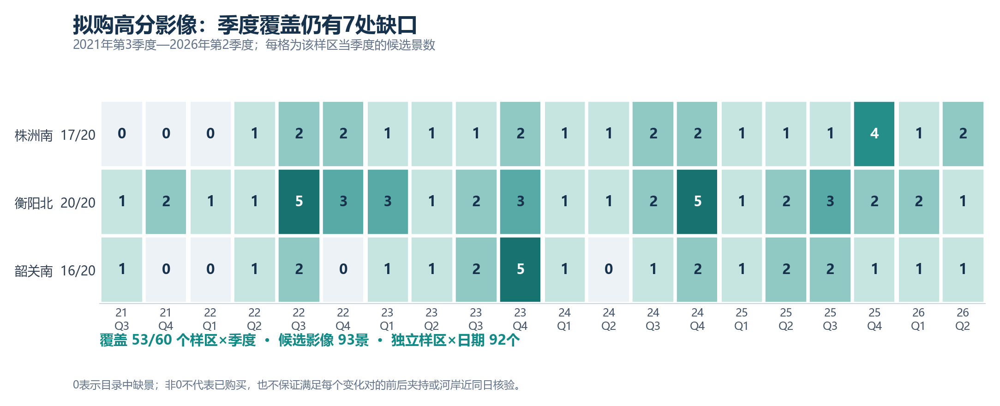
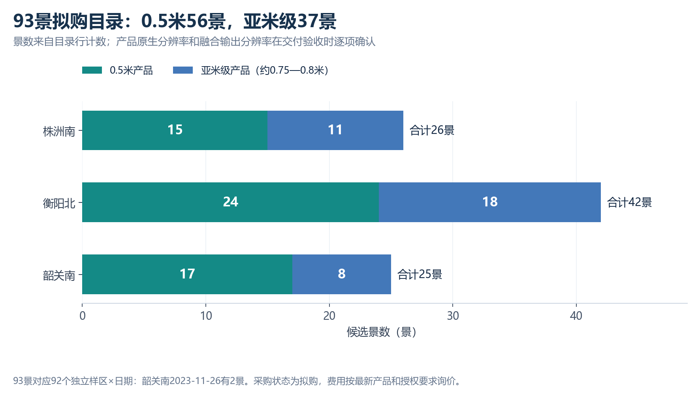
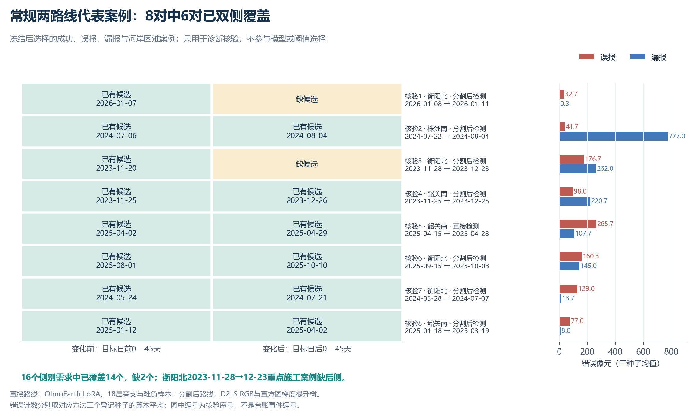
16 河岸、水边线与洪水监测
16.1 先区分水域、水边线和固定河岸形态
水域范围描述拍摄时可见的水面，水边线是该时刻水面与陆地的交界。两者都受水位影响。河岸坡顶、坡脚和侵蚀边界则是另一类地貌对象，不能仅凭两期水边线不同就判定河岸发生侵蚀。岸坡是否稳定还需要地形、地质和工程证据。本专题把历史水域筛查与米级岸线变化核验分开，避免给水面涨落赋予超出影像证据的工程解释。
现有历史分析在两个临河样区布置铁路侧断面，使用多期Sentinel-2水体指标与水边线位置进行比较。所有距离都是样区研究中的遥感量测值，铁路位置和影像配准本身存在误差，不能据此判断安全距离是否达标。
| 量测量 | 株洲南 | 韶关南 | 解释 |
|---|---|---|---|
| 铁路侧分析断面 | 31条 | 26条 | 是同一样区内的空间采样，不是31/26个独立铁路样本 |
| 水边线季节差中位数 | −1.7米 | −0.3米 | 中位变化较小，不能推广为所有断面均小于5米 |
| 水边线跨年差中位数 | −0.3米 | −0.75米 | 对比的是历史影像中的水边线位置 |
| 单景水边线摆动幅度中位数 | 5.7米 | 6.4米 | 包含水位、分类、配准等共同影响，不是独立测得的仪器RMSE |
| 单景摆动幅度最大值 | 19.2米 | 14.3米 | 说明个别断面存在明显异常或短时变化，需要单独核查 |
总体中位差小于单景摆动幅度，是当前米级长期变化难以稳定解释的主要证据。韶关南仍有3个季节差和2个跨年差超过5米的异常断面，不能将所有断面概括为“半个像元以内”。这些异常与陡坡和冬季低太阳高度阴影重叠，暗色坡面可能被水体分类误纳入水面。它们应以异常案例单列，而不是直接视为岸线侵蚀证据。
16.2 变化检测的水边困难与量测误差相互叠加
河岸附近同时存在混合像元、水位涨落、浑浊度、水色、植被季节变化和阴影。这些因素可以让前后光谱明显不同，但不一定对应持续地表扰动。反过来，细窄的岸坡变化可能只占一个10米像元的一部分，进入像元平均后又难以被检出。变化检测需要报告河岸带内外的精度和类别召回，岸线量测则需要报告定位、配准和同期水位，两者不能用同一个总体F1替代。
旧时间划分上的河岸精度可用于解释错误来源，本次主结论应使用新的滚动起点结果。河岸带、无雾/有雾、不同变化类型属于附加分析维度，它们帮助解释主评分，不替代全部变化的正式评价。
16.3 洪峰附近的时间覆盖问题
广东省政府2022年6月22日发布的报道记录了6月21日17时韶关市区的一次洪峰；本研究可用的6月23日Sentinel-2影像距该时刻约两天。因此，影像能提供洪水过程后的水域状态，不能视为研究段同步洪峰的范围。官方背景见广东省政府：韶关众志成城防大汛。
2024年4月北江及连江发生特大洪水，见应急管理部2024年4月自然灾害情况。在本研究所筛选的清晰光学影像序列中，关键时段存在较长缺口。影像没有记录到某次过程，表示该观测序列缺少有效覆盖，不能解释成没有发生洪水。更高空间分辨率也不能补回没有被拍摄的时刻。
16.4 高分、雷达和水位资料如何分工
| 研究问题 | 主要资料 | 实验设计 | 需要报告的结果 |
|---|---|---|---|
| 同一天水边线是否提准 | 近同日原生亚米影像、Sentinel-2及水位 | 四个目标日期分别核验，统一地面范围与配准，盲判水边线 | 绝对偏差、方向偏差、分断面分布与不可判比例 |
| 河岸形态是否持续改变 | 多期高分、固定地貌对象、必要的现场控制点 | 识别坡顶/坡脚或固定侵蚀对象，排除仅由水位导致的水边线变化 | 面积与位移、持续性、定位误差及证据等级 |
| 光学缺景时的水域变化 | Sentinel-1同轨资料与水位 | 同轨前后对照，辐射和地形校正，掩膜叠掩与阴影 | 水域变化与水位的一致性、地形困难区和误报 |
| 是否接近铁路关注区 | 质量可核验的铁路位置、地形和水域范围 | 将位置误差传播到距离统计，先做历史筛查 | 距离的范围与不确定性，不能直接转成工程安全结论 |
Sentinel-1能在云雨条件下观测，但陡岸的叠掩、阴影、入射角和散射机制同样会造成判别困难，不能把雷达简单作为无误差真值。传感器能力说明见欧洲空间局Sentinel-1任务，地形校正与叠掩、阴影处理见欧洲空间局Sentinel-1工具箱。本阶段最可执行的是先补近同日高分与同期水位，量化水边线误差，再决定哪些河段适合进入更精细的岸坡研究。
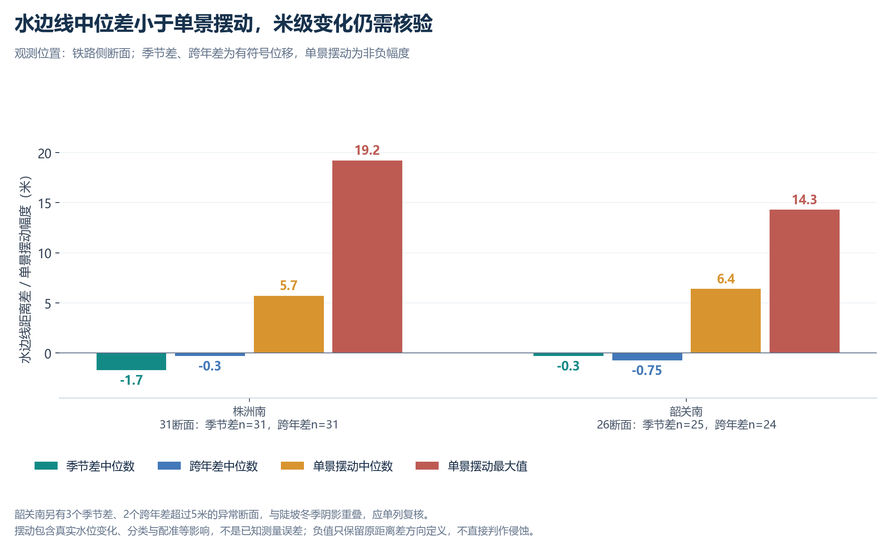
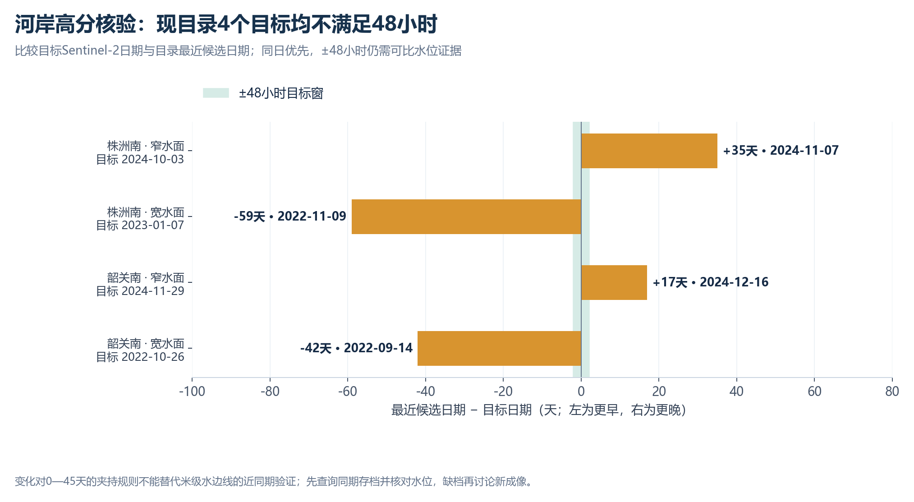

17 匿名台账：可观测性与研究拓展
17.1 台账与影像之间不是一一对应
台账记录的日期可能是巡查或发现日期，真实发生时间可能更早。同一地点也可能有复发和多次记录；事后影像里最明显的变化还可能来自清理、回填或其他处置。建立遥感验证时，应先把记录归为事件窗口与地点组，再看事件前后是否存在可以归属的影像证据。直接把每条记录当成一个独立、精确日期的遥感目标，会混淆数据可见性与模型能力。
现有总体台账包含1,180条记录、1,095个事件组和911个地点，其中122个地点有复发。进入当前图像复核汇总的是922个事件窗口，对应990条记录。两个数据范围的分母不同，不能把922窗口、990条记录和1,180条总记录交替用于计算同一个百分比。
以下只发布匿名汇总，不公开原始记录、人员、事件编号、坐标、隐患里程或原文。事件点采购查询与外部数据服务的使用，也需要遵守资料提供方的授权范围。
17.2 当前图像复核得到的可观测性
现有922窗口采用AI辅助逐窗看图、背靠背复判、分歧复看和抽查，并结合前后多期与上年同期影像。其结果是一套用于研究设计的可观测性分组，尚不能替代独立专业人员的盲评真值。人工专业复核应重点覆盖可见样本、边界样本与一部分随机不可见样本。
| 类型组 | 窗口数 | 可归属为台账事件 | 清晰影像中未见痕迹 | 关键影像不足或难判 | 有变化但归属不符 | 假变化 |
|---|---|---|---|---|---|---|
| 滑坡溜坍 | 493 | 95 | 165 | 128 | 51 | 54 |
| 遥感不适用类 | 297 | 5 | 172 | 115 | 3 | 2 |
| 水淹 | 102 | 3 | 3 | 76 | 5 | 15 |
| 冲刷 | 17 | 2 | 7 | 4 | 2 | 2 |
| 泥石流 | 13 | 5 | 2 | 1 | 4 | 1 |
| 合计 | 922 | 110 | 349 | 324 | 65 | 74 |
可归属的110个窗口占11.9%；对应的122条记录占当前已映射990条的12.3%。其中24个窗口主要呈现处置痕迹，需要与直接看到灾害本体的情况分开。水淹类102个窗口中有76个属于关键影像不足或难判，说明时间覆盖是这一类问题的重要限制。
11.9%是这套图像复核中的观测可见比例，不是变化检测模型的召回率。“清晰影像中未见痕迹”也不同于“关键影像不足”：前者表示在已有清晰前后图里没有发现可归属痕迹，后者表示观测证据不足。两类应分别研究，不能都记成模型漏报。
17.3 研究一：在可观测子集上做外部模型检验
第一项工作是在专业复核后冻结可见窗口，运行直接变化检测和先分割后检测，并保留与三个训练样区独立的外部评价。评价单位以事件组和地点为主，报告事件是否被检出、目标位置的误报，以及不同变化规模的结果。处置痕迹和灾害本体分别统计，避免模型只学会识别施工或清理痕迹，却被解释为识别了灾害发生。
负对照应来自同线、相近地貌和相近观测条件的地点，不能只选特别平静、特别清晰的区域。现有候选对照还需复核其无事件记录的含义；“未记录”不等于确定没有事件。抽样规则、时间窗口、空间容差和检出判据在运行模型前固定，区间按地点或事件组重抽。
17.4 研究二：用事件前环境研究易灾背景
第二项研究不要求10米影像直接看见事件本体，而是比较事件前的地表环境。可以研究坡度、汇流条件、植被覆盖及趋势、历史裸土比例和有水比例，在事件地点与匹配对照地点之间有何差别。所有特征只从发现日期之前提取；复发地点应作为同一分组，跨验证集合时保持隔离。
这一设计需要更大范围的地形数据，避免2公里局部窗口把上游汇流区域截断。应先登记匹配规则与候选特征，再做效应估计和空间分块验证。即使发现背景差异，也首先是关联证据；工程因果解释需要进一步资料支撑。
17.5 研究三：事件前兆、发生时间与持续性
第三项研究利用事件前180天、后90天以及上年同季的时间序列，考察植被退化、裸土扩大或水域变化是否持续，以及何时首次出现。应同时报告有效清晰影像之间的间隔。如果前后可用影像相隔数周，事件发生时间只能落在一个区间内，不能把发现日当作遥感断点的精确日期。
对短期水淹与持续地表扰动，应分别定义观察窗口。对仅在事后出现的处置痕迹，应报告它与台账日期的相对关系。若未来讨论提前识别，只能使用当时已经可获得的观测，不能让后续影像参与前兆判定。
17.6 研究四：降雨、水位与地形条件的联合分析
第四项工作需要补齐独立的降雨和水位资料，再比较事件与对照地点在事件前1、3、7、30日的环境条件。不同事件类型的触发机制不同，滑坡、泥石流、水淹和冲刷应分开分析；小样本类型不宜套用过多参数。
分析中应交代雨量资料的空间分辨率、站点距离和缺测情况，统一水位的基准与时间。多种累计窗口和背景变量同时尝试时，应保留预先登记的主分析，探索性结果另列。遥感变化图提供地表线索，不能单凭一次关联就推断具体事件的成因。
17.7 研究五：用高分量化10米的可见下限
第五项研究从可见、清晰影像中未见痕迹、关键影像不足三组中分层抽样，使用经许可的精确日期高分影像对核验。这样既能回答模型漏掉了什么，也能回答哪些事件本身超出了10米观测能力。核验输出包括实际变化面积、宽度、是否被植被或地形遮挡，以及10米像元中的变化面积比例。
采购前不向外部平台提交未经授权的台账位置。公开报告保留抽样组别、匿名数量和统计结果；原影像、记录和事件位置继续在本地受控分析。以上五项是后续研究设计，当前已完成的是可观测性分组与数据准备，不能把计划写成已经获得的模型外部精度。
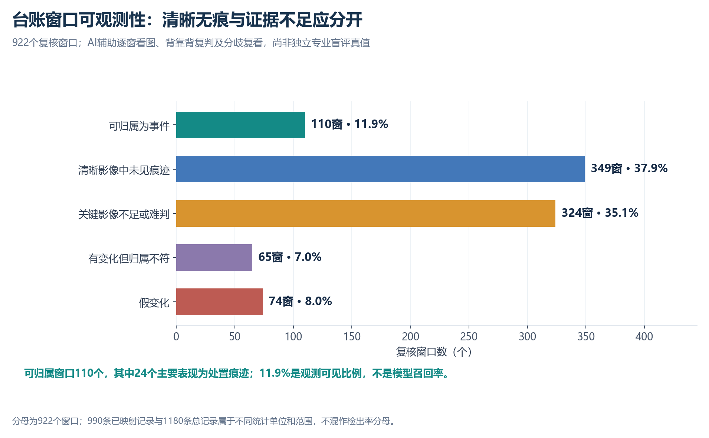
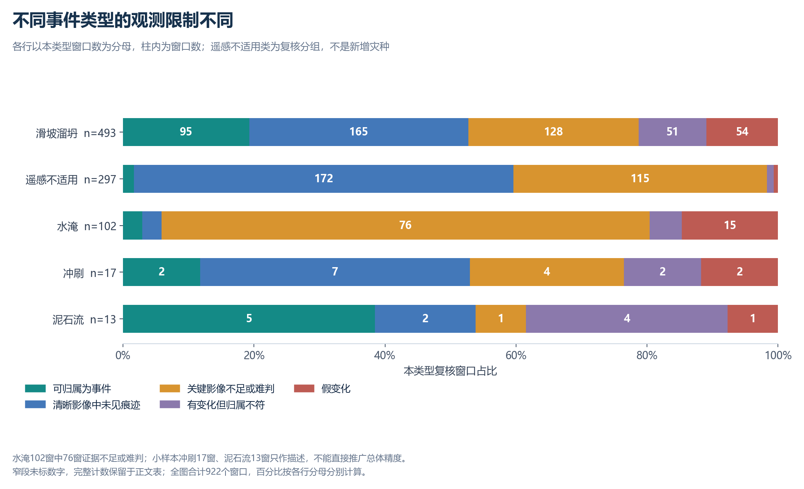
18 结论、当前缺口与下一阶段安排
18.1 当前回答与下一步决策
本阶段已经建立从多年多光谱影像、统一参考标签、时间划分到逐对预测与多维评价的完整链条。主讲方案采用D2LS–ConvNeXt-Base RGB分割后接直方图梯度提升树，三折等权F1为0.6878；OlmoEarth双时相LoRA后段辅助残差方案作为直接检测基线。输入令牌辅助嵌入属于单模型改进，保留受控比较，不依靠复杂集成作为结论。
主要问题集中在长期时间外推、株洲南的漏报、河岸混合像元、小型新增建筑和雾/阴影条件。当前数字衡量对统一参考的符合程度；高分核验、独立专业复核和未知样区测试将决定结果能否支持更广泛应用。
接下来先按2023年衡阳北施工案例及误差优先日期做高分配对核验，补充四期河岸近同期资料；再构建可见台账窗口与匹配稳定对照，验证10米的观测下限。新增标签与模型改进另冻结版本，保持本次结果可追溯。采购方案需完成最新存档确认、授权和询价，93景拟购目录不能当作已经到货的资料。
| 优先级 | 具体交付 | 完成判据 | 目前状态 |
|---|---|---|---|
| 第一优先 | 固定主方案、保存三折预测与正式评分 | 每折、均值、合并和事件均可追溯 | 已完成本次结果归档与核对 |
| 第二优先 | 施工与错误重点的高分前后期核验 | 同地同范围、准确日期、独立复标 | 有候选目录；缺侧时相待补 |
| 第三优先 | 河岸同水位/近同期对照 | 配准误差、水位差和岸线位移分别计量 | 10米结果已有；高分与水位待补 |
| 第四优先 | 可见台账子集外部验证 | 事件与匹配负样本、时间边界预先冻结 | 完成可观测性图像复核；尚未完成外部模型评测 |
| 持续推进 | 未知样区测试与受控多种子消融 | 固定方法、固定协议，区分开发与独立检验 | 待新样区和独立标签 |
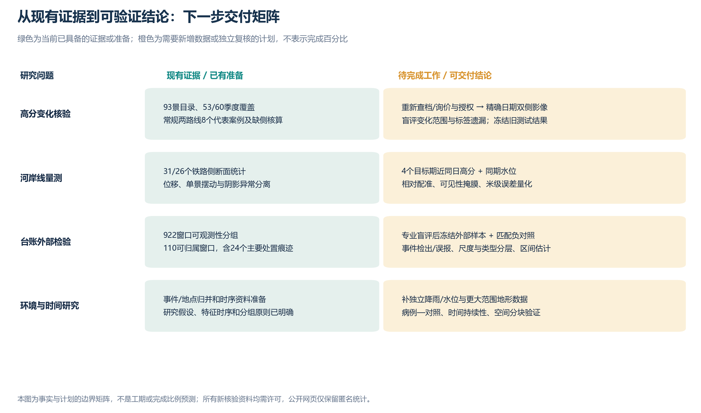
19 附录：全部完成配置与每折结果
下表保留所有已完成配置及其真实重复含义，便于审查完整比较。不同骨干、输入、预算和集成输出分别登记，不把配置数量当成独立算法数量。默认主线仍是上文的两个常规方案；历史低质量训练、单种子与复杂集成均有相应标注。
查看完整直接检测与分割后检测的排名图
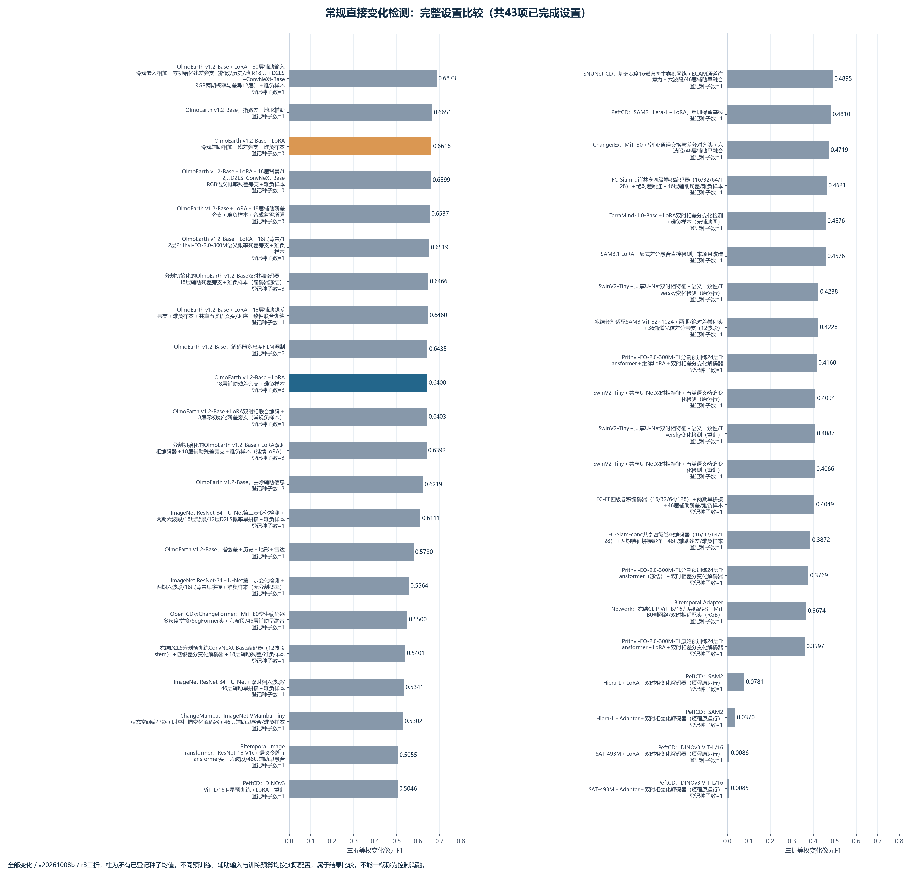
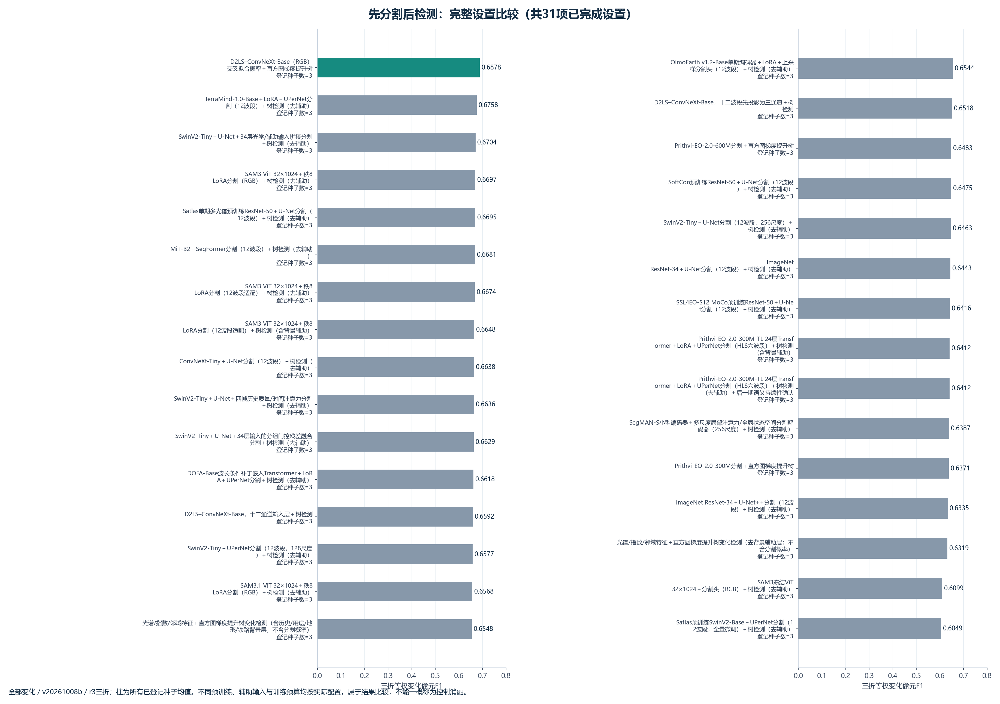
19.1 直接检测：43个已完成配置/输出
| 完整方法与实际改造 | 2023春夏 | 2023冬—2024春 | 2024年4月以后 | 三折等权F1 | 合并像元F1 | 重复含义 | 等权F1的95%区间 | 事件检出率 | 误报片占比 |
|---|---|---|---|---|---|---|---|---|---|
| OlmoEarth v1.2-Base＋LoRA＋30层辅助输入令牌嵌入相加＋零初始化残差旁支（指数/历史/地形18层＋D2LS–ConvNeXt-Base RGB两期概率与差异12层）＋难负样本训练 | 0.7426 | 0.6856 | 0.6338 | 0.6873 | 0.6647 | 1个训练种子 | 0.4228—0.7561 | 62.9% | 46.0% |
| OlmoEarth v1.2-Base＋LoRA＋指数/地形残差旁支＋难负样本训练（移除历史同期） | 0.7778 | 0.6460 | 0.5716 | 0.6651 | 0.6177 | 1个训练种子 | 0.4257—0.7373 | 61.4% | 56.5% |
| OlmoEarth v1.2-Base＋LoRA＋输入令牌级18层辅助嵌入相加＋18层指数/历史/地形零初始化残差旁支＋难负样本训练 | 0.7434 | 0.6832 | 0.5583 | 0.6616 | 0.6155 | 3个训练种子 | 0.3949—0.7418 | 64.0% | 52.4% |
| OlmoEarth v1.2-Base＋LoRA＋18层背景/12层D2LS–ConvNeXt-Base RGB语义概率残差旁支＋难负样本 | 0.7536 | 0.6660 | 0.5602 | 0.6599 | 0.6103 | 3个训练种子 | 0.4218—0.7305 | 69.3% | 50.8% |
| OlmoEarth v1.2-Base＋LoRA＋18层指数/历史/地形零初始化残差旁支＋难负样本训练＋合成薄雾增强 | 0.7645 | 0.6501 | 0.5466 | 0.6537 | 0.5985 | 3个训练种子 | 0.3996—0.7302 | 66.7% | 53.3% |
| OlmoEarth v1.2-Base＋LoRA＋18层背景/12层Prithvi-EO-2.0-300M语义概率残差旁支＋难负样本 | 0.6708 | 0.6566 | 0.6282 | 0.6519 | 0.6428 | 1个训练种子 | 0.3862—0.7244 | 58.6% | 43.3% |
| 五类分割初始化的OlmoEarth v1.2-Base双时相编码器＋18层指数/历史/地形零初始化残差旁支＋难负样本训练（编码器冻结） | 0.7086 | 0.6423 | 0.5890 | 0.6466 | 0.6189 | 3个训练种子 | 0.3890—0.7216 | 62.4% | 47.4% |
| OlmoEarth v1.2-Base＋LoRA＋18层指数/历史/地形零初始化残差旁支＋难负样本训练＋共享五类语义头/时序一致性联合训练 | 0.6915 | 0.6509 | 0.5956 | 0.6460 | 0.6227 | 1个训练种子 | 0.3560—0.7321 | 69.3% | 52.7% |
| OlmoEarth v1.2-Base＋LoRA＋18层辅助金字塔在变化解码器多尺度FiLM仿射调制＋难负样本训练 | 0.6371 | 0.6918 | 0.6016 | 0.6435 | 0.6352 | 2个训练种子 | — | 67.5% | 47.4% |
| OlmoEarth v1.2-Base＋LoRA双时相联合编码变化检测＋18层指数/历史/地形零初始化残差旁支＋难负样本训练 | 0.7348 | 0.6516 | 0.5361 | 0.6408 | 0.5837 | 3个训练种子 | 0.3814—0.7192 | 63.6% | 56.1% |
| OlmoEarth v1.2-Base＋LoRA双时相联合编码变化检测＋18层零初始化残差旁支（常规负样本） | 0.7103 | 0.6434 | 0.5673 | 0.6403 | 0.6053 | 1个训练种子 | 0.3907—0.7118 | 63.6% | 49.2% |
| 五类分割初始化的OlmoEarth v1.2-Base＋LoRA双时相编码器＋18层指数/历史/地形零初始化残差旁支＋难负样本训练（继续LoRA） | 0.6788 | 0.6460 | 0.5927 | 0.6392 | 0.6174 | 3个训练种子 | 0.3674—0.7185 | 63.3% | 47.5% |
| OlmoEarth v1.2-Base＋LoRA双时相联合编码变化检测＋难负样本训练（无辅助图） | 0.7155 | 0.6444 | 0.5059 | 0.6219 | 0.5706 | 3个训练种子 | 0.3648—0.6949 | 57.1% | 56.0% |
| ImageNet ResNet-34＋U-Net第二步变化检测＋两期六波段/18层背景/12层D2LS概率早拼接＋难负样本 | 0.6948 | 0.7172 | 0.4211 | 0.6111 | 0.5485 | 1个训练种子 | 0.3077—0.6776 | 47.1% | 62.9% |
| OlmoEarth v1.2-Base＋LoRA＋指数/历史/地形/Sentinel-1雷达残差旁支＋难负样本训练 | 0.6936 | 0.6408 | 0.4026 | 0.5790 | 0.4752 | 1个训练种子 | 0.2740—0.6665 | 69.3% | 76.7% |
| ImageNet ResNet-34＋U-Net第二步变化检测＋两期六波段/18层背景早拼接＋难负样本（无分割概率） | 0.6225 | 0.6651 | 0.3817 | 0.5564 | 0.5070 | 1个训练种子 | 0.2977—0.6324 | 34.3% | 56.9% |
| Open-CD版ChangeFormer：MiT-B0孪生编码器＋多尺度拼接/SegFormer头＋六波段/46层辅助早融合 | 0.5509 | 0.6551 | 0.4441 | 0.5500 | 0.5399 | 1个训练种子 | 0.3413—0.6314 | 30.0% | 56.8% |
| 冻结D2LS五类分割预训练ConvNeXt-Base编码器（12波段stem）＋四级差分变化解码器＋18层辅助残差/难负样本 | 0.7730 | 0.5528 | 0.2944 | 0.5401 | 0.4085 | 1个训练种子 | 0.2760—0.6184 | 42.9% | 76.9% |
| ImageNet ResNet-34＋U-Net＋双时相六波段/46层辅助早拼接＋难负样本 | 0.5814 | 0.5659 | 0.4550 | 0.5341 | 0.5228 | 1个训练种子 | 0.2556—0.6442 | 40.0% | 61.1% |
| ChangeMamba：ImageNet VMamba-Tiny状态空间编码器＋时空扫描变化解码器＋46层辅助早融合/难负样本 | 0.5297 | 0.6551 | 0.4060 | 0.5302 | 0.5089 | 1个训练种子 | 0.2792—0.6340 | 40.0% | 65.3% |
| Bitemporal Image Transformer：ResNet-18 V1c＋语义令牌Transformer头＋六波段/46层辅助早融合 | 0.6437 | 0.5605 | 0.3124 | 0.5055 | 0.4287 | 1个训练种子 | 0.2474—0.5742 | 33.6% | 71.3% |
| PeftCD重训：DINOv3 ViT-L/16 SAT-493M＋LoRA＋GroupNorm双分支变化解码器 | 0.6318 | 0.5902 | 0.2917 | 0.5046 | 0.4286 | 1个训练种子 | 0.1931—0.5835 | 32.1% | 68.9% |
| SNUNet-CD：基础宽度16嵌套孪生卷积网络＋ECAM通道注意力＋六波段/46层辅助早融合 | 0.4279 | 0.6761 | 0.3645 | 0.4895 | 0.4798 | 1个训练种子 | 0.2728—0.5701 | 47.9% | 71.1% |
| PeftCD重训：SAM2 Hiera-L＋LoRA＋GroupNorm双分支变化解码器 | 0.5165 | 0.5965 | 0.3301 | 0.4810 | 0.4190 | 1个训练种子 | 0.1820—0.5661 | 43.6% | 73.8% |
| ChangerEx：MiT-B0＋空间/通道交换与差分对齐头＋六波段/46层辅助早融合 | 0.4567 | 0.5215 | 0.4376 | 0.4719 | 0.4783 | 1个训练种子 | 0.2345—0.6061 | 34.3% | 72.1% |
| FC-Siam-diff共享四级卷积编码器（16/32/64/128）＋绝对差跳连＋46层辅助残差/难负样本 | 0.2913 | 0.6641 | 0.4309 | 0.4621 | 0.4763 | 1个训练种子 | 0.2178—0.5808 | 42.1% | 67.5% |
| TerraMind-1.0-Base＋LoRA双时相差分变化检测＋难负样本（无辅助图） | 0.4995 | 0.5725 | 0.3008 | 0.4576 | 0.4432 | 1个训练种子 | 0.1987—0.5672 | 22.9% | 71.7% |
| 参照PeftCD的SAM3.1改造：32层1024维视觉Transformer＋秩8 LoRA＋GroupNorm单头变化解码器 | 0.5696 | 0.5312 | 0.2719 | 0.4576 | 0.4242 | 1个训练种子 | 0.1922—0.5368 | 26.4% | 70.8% |
| SwinV2-Tiny＋共享U-Net双时相特征＋语义一致性/Tversky变化检测（原运行） | 0.4512 | 0.4471 | 0.3731 | 0.4238 | 0.4150 | 1个训练种子 | — | 41.4% | 73.8% |
| 冻结五类分割适配SAM3 32层1024维视觉Transformer＋两期/绝对差卷积头＋36通道光谱差分旁支（12波段） | 0.3679 | 0.5247 | 0.3757 | 0.4228 | 0.4068 | 1个训练种子 | 0.2032—0.5213 | 52.1% | 78.8% |
| Prithvi-EO-2.0-300M-TL五类分割预训练24层Transformer＋继续LoRA＋双时相差分变化解码器 | 0.4543 | 0.5606 | 0.2331 | 0.4160 | 0.3878 | 1个训练种子 | 0.1257—0.5082 | 17.1% | 73.2% |
| SwinV2-Tiny＋共享U-Net双时相特征＋五类语义蒸馏变化检测（原运行） | 0.3687 | 0.4567 | 0.4028 | 0.4094 | 0.4230 | 1个训练种子 | — | 43.6% | 74.6% |
| SwinV2-Tiny＋共享U-Net双时相特征＋语义一致性/Tversky变化检测（重训） | 0.3954 | 0.4661 | 0.3646 | 0.4087 | 0.4111 | 1个训练种子 | 0.1915—0.5165 | 36.4% | 72.4% |
| SwinV2-Tiny＋共享U-Net双时相特征＋五类语义蒸馏变化检测（重训） | 0.4144 | 0.4246 | 0.3810 | 0.4066 | 0.4040 | 1个训练种子 | 0.2172—0.5003 | 45.0% | 78.1% |
| FC-EF四级卷积编码器（16/32/64/128）＋两期早拼接＋46层辅助残差/难负样本 | 0.1193 | 0.7010 | 0.3946 | 0.4049 | 0.3600 | 1个训练种子 | 0.2135—0.5589 | 47.1% | 79.2% |
| FC-Siam-conc共享四级卷积编码器（16/32/64/128）＋两期特征拼接跳连＋46层辅助残差/难负样本 | 0.2656 | 0.6971 | 0.1990 | 0.3872 | 0.2988 | 1个训练种子 | 0.1965—0.4424 | 44.3% | 86.4% |
| Prithvi-EO-2.0-300M-TL五类分割预训练24层Transformer（冻结）＋双时相差分变化解码器 | 0.3856 | 0.5599 | 0.1853 | 0.3769 | 0.3621 | 1个训练种子 | 0.1326—0.4665 | 22.1% | 81.5% |
| Bitemporal Adapter Network：冻结CLIP ViT-B/16九层编码器＋MiT-B0侧网络/双时相适配头（RGB） | 0.2482 | 0.4401 | 0.4138 | 0.3674 | 0.4129 | 1个训练种子 | 0.1922—0.4741 | 35.0% | 75.2% |
| Prithvi-EO-2.0-300M-TL原始预训练24层Transformer＋LoRA＋双时相差分变化解码器 | 0.4043 | 0.4988 | 0.1761 | 0.3597 | 0.3512 | 1个训练种子 | 0.0700—0.4649 | 12.9% | 69.2% |
| PeftCD：SAM2 Hiera-L＋LoRA＋双时相变化解码器（短程原运行） | 0.0137 | 0.1788 | 0.0417 | 0.0781 | 0.0362 | 1个训练种子 | — | 17.1% | 96.4% |
| PeftCD：SAM2 Hiera-L＋Adapter＋双时相变化解码器（短程原运行） | 0.0000 | 0.0538 | 0.0570 | 0.0370 | 0.0546 | 1个训练种子 | — | 16.4% | 95.6% |
| PeftCD：DINOv3 ViT-L/16 SAT-493M＋LoRA＋双时相变化解码器（短程原运行） | 0.0000 | 0.0201 | 0.0056 | 0.0086 | 0.0156 | 1个训练种子 | — | 12.1% | 99.0% |
| PeftCD：DINOv3 ViT-L/16 SAT-493M＋Adapter＋双时相变化解码器（短程原运行） | 0.0000 | 0.0213 | 0.0041 | 0.0085 | 0.0102 | 1个训练种子 | — | 12.1% | 99.1% |
19.2 先分割后检测：31个已完成配置/输出
| 完整方法与实际改造 | 2023春夏 | 2023冬—2024春 | 2024年4月以后 | 三折等权F1 | 合并像元F1 | 重复含义 | 等权F1的95%区间 | 事件检出率 | 误报片占比 |
|---|---|---|---|---|---|---|---|---|---|
| D2LS–ConvNeXt-Base五类分割（RGB）＋交叉拟合概率＋直方图梯度提升树变化检测（去背景辅助层） | 0.7377 | 0.7585 | 0.5672 | 0.6878 | 0.6613 | 3次树训练；分割单种子 | 0.4371—0.7571 | 51.4% | 42.0% |
| TerraMind-1.0-Base＋LoRA＋UPerNet五类分割（12波段）＋交叉拟合概率＋直方图梯度提升树变化检测（去背景辅助层） | 0.7597 | 0.7247 | 0.5432 | 0.6758 | 0.6346 | 3次树训练；分割单种子 | 0.4342—0.7422 | 49.8% | 54.3% |
| SwinV2-Tiny＋U-Net＋34层光学/辅助输入拼接五类分割＋交叉拟合概率＋直方图梯度提升树变化检测（去背景辅助层） | 0.7648 | 0.7371 | 0.5093 | 0.6704 | 0.6302 | 3次树训练；分割单种子 | 0.4023—0.7453 | 42.1% | 48.0% |
| SAM3 32层1024维视觉Transformer＋秩8 LoRA五类分割（RGB）＋交叉拟合概率＋直方图梯度提升树变化检测（去背景辅助层） | 0.7578 | 0.7406 | 0.5107 | 0.6697 | 0.6364 | 3次树训练；分割单种子 | 0.4162—0.7542 | 37.4% | 40.9% |
| Satlas单期多光谱预训练ResNet-50＋U-Net五类分割（12波段）＋交叉拟合概率＋直方图梯度提升树变化检测（去背景辅助层） | 0.7465 | 0.7591 | 0.5028 | 0.6695 | 0.6295 | 3次树训练；分割单种子 | 0.4257—0.7427 | 45.0% | 50.2% |
| MiT-B2＋SegFormer五类分割（12波段）＋交叉拟合概率＋直方图梯度提升树变化检测（去背景辅助层） | 0.7885 | 0.7330 | 0.4829 | 0.6681 | 0.6218 | 3次树训练；分割单种子 | 0.4155—0.7515 | 40.2% | 48.4% |
| SAM3 32层1024维视觉Transformer＋秩8 LoRA五类分割（12波段适配）＋交叉拟合概率＋直方图梯度提升树变化检测（去背景辅助层） | 0.7861 | 0.7151 | 0.5009 | 0.6674 | 0.6299 | 3次树训练；分割单种子 | 0.4046—0.7489 | 40.7% | 48.0% |
| SAM3 32层1024维视觉Transformer＋秩8 LoRA五类分割（12波段适配）＋交叉拟合概率＋直方图梯度提升树变化检测（含历史/用途/地形/铁路背景层） | 0.7831 | 0.7212 | 0.4901 | 0.6648 | 0.6271 | 3次树训练；分割单种子 | 0.4016—0.7468 | 41.0% | 49.2% |
| ConvNeXt-Tiny＋U-Net五类分割（12波段）＋交叉拟合概率＋直方图梯度提升树变化检测（去背景辅助层） | 0.7802 | 0.7414 | 0.4698 | 0.6638 | 0.6184 | 3次树训练；分割单种子 | 0.4259—0.7419 | 39.5% | 38.5% |
| SwinV2-Tiny＋U-Net＋四帧历史质量/时间注意力五类分割＋交叉拟合概率＋直方图梯度提升树变化检测（去背景辅助层） | 0.7314 | 0.7619 | 0.4976 | 0.6636 | 0.6284 | 3次树训练；分割单种子 | 0.4213—0.7417 | 43.1% | 43.5% |
| SwinV2-Tiny＋U-Net＋34层输入的分组门控残差融合五类分割＋交叉拟合概率＋直方图梯度提升树变化检测（去背景辅助层） | 0.7385 | 0.7476 | 0.5027 | 0.6629 | 0.6270 | 3次树训练；分割单种子 | 0.3764—0.7439 | 41.7% | 47.8% |
| DOFA-Base波长条件补丁嵌入Transformer＋LoRA＋UPerNet五类分割＋交叉拟合概率＋直方图梯度提升树变化检测（去背景辅助层） | 0.7533 | 0.7151 | 0.5170 | 0.6618 | 0.6206 | 3次树训练；分割单种子 | 0.4204—0.7352 | 46.4% | 57.5% |
| D2LS–ConvNeXt-Base五类分割（12波段stem扩展）＋交叉拟合概率＋直方图梯度提升树变化检测（去背景辅助层） | 0.7701 | 0.7225 | 0.4851 | 0.6592 | 0.6199 | 3次树训练；分割单种子 | 0.4172—0.7393 | 37.9% | 40.6% |
| SwinV2-Tiny＋UPerNet五类分割（12波段，128尺度）＋交叉拟合概率＋直方图梯度提升树变化检测（去背景辅助层） | 0.7717 | 0.7196 | 0.4817 | 0.6577 | 0.6065 | 3次树训练；分割单种子 | 0.4254—0.7212 | 44.8% | 43.0% |
| SAM3.1 32层1024维视觉Transformer＋秩8 LoRA五类分割（RGB）＋交叉拟合概率＋直方图梯度提升树变化检测（去背景辅助层） | 0.7552 | 0.6954 | 0.5197 | 0.6568 | 0.6242 | 3次树训练；分割单种子 | 0.3942—0.7403 | 41.0% | 55.8% |
| 光谱/指数/邻域特征＋直方图梯度提升树变化检测（含历史/用途/地形/铁路背景层；不含分割概率） | 0.7792 | 0.7230 | 0.4622 | 0.6548 | 0.6172 | 3次树训练；无分割网络 | 0.3827—0.7451 | 37.4% | 50.3% |
| OlmoEarth v1.2-Base单期编码器＋LoRA＋上采样五类分割头（12波段）＋交叉拟合概率＋直方图梯度提升树变化检测（去背景辅助层） | 0.7168 | 0.7449 | 0.5014 | 0.6544 | 0.6144 | 3次树训练；分割单种子 | 0.3663—0.7235 | 51.7% | 54.7% |
| D2LS–ConvNeXt-Base五类分割（12→3通道适配）＋交叉拟合概率＋直方图梯度提升树变化检测（去背景辅助层） | 0.6698 | 0.7339 | 0.5516 | 0.6518 | 0.6337 | 3次树训练；分割单种子 | 0.4224—0.7269 | 44.5% | 45.6% |
| Prithvi-EO-2.0-600M-TL 32层Transformer＋LoRA＋UPerNet五类分割（HLS六波段）＋交叉拟合概率＋直方图梯度提升树变化检测（去背景辅助层） | 0.6439 | 0.7426 | 0.5585 | 0.6483 | 0.6373 | 3次树训练；分割单种子 | 0.4079—0.7186 | 46.0% | 46.5% |
| SoftCon预训练ResNet-50＋U-Net五类分割（12波段）＋交叉拟合概率＋直方图梯度提升树变化检测（去背景辅助层） | 0.6763 | 0.7428 | 0.5234 | 0.6475 | 0.6251 | 3次树训练；分割单种子 | 0.4177—0.7183 | 47.4% | 52.1% |
| SwinV2-Tiny＋U-Net五类分割（12波段，256尺度）＋交叉拟合概率＋直方图梯度提升树变化检测（去背景辅助层） | 0.7231 | 0.7421 | 0.4738 | 0.6463 | 0.6196 | 3次树训练；分割单种子 | 0.3986—0.7273 | 38.6% | 37.9% |
| ImageNet ResNet-34＋U-Net五类分割（12波段）＋交叉拟合概率＋直方图梯度提升树变化检测（去背景辅助层） | 0.6622 | 0.7373 | 0.5334 | 0.6443 | 0.6181 | 3次树训练；分割单种子 | 0.4003—0.7136 | 54.3% | 58.1% |
| SSL4EO-S12 MoCo预训练ResNet-50＋U-Net五类分割（12波段）＋交叉拟合概率＋直方图梯度提升树变化检测（去背景辅助层） | 0.6808 | 0.7572 | 0.4869 | 0.6416 | 0.6024 | 3次树训练；分割单种子 | 0.4223—0.7111 | 43.3% | 61.1% |
| Prithvi-EO-2.0-300M-TL 24层Transformer＋LoRA＋UPerNet五类分割（HLS六波段）＋交叉拟合概率＋直方图梯度提升树变化检测（含历史/用途/地形/铁路背景层） | 0.6723 | 0.7378 | 0.5136 | 0.6412 | 0.6234 | 3次树训练；分割单种子 | 0.3707—0.7278 | 40.2% | 48.8% |
| Prithvi-EO-2.0-300M-TL 24层Transformer＋LoRA＋UPerNet五类分割（HLS六波段）＋交叉拟合概率＋直方图梯度提升树变化检测（去背景辅助层）＋后一期语义持续性确认 | 0.6391 | 0.7300 | 0.5547 | 0.6412 | 0.6321 | 3次树训练；分割单种子 | 0.3688—0.7229 | 43.6% | 48.6% |
| SegMAN-S小型编码器＋多尺度局部注意力/全局状态空间分割解码器（256尺度）＋交叉拟合概率＋直方图梯度提升树变化检测（去背景辅助层） | 0.7150 | 0.7267 | 0.4743 | 0.6387 | 0.6125 | 3次树训练；分割单种子 | 0.3777—0.7199 | 38.1% | 48.2% |
| Prithvi-EO-2.0-300M-TL 24层Transformer＋LoRA＋UPerNet五类分割（HLS六波段）＋交叉拟合概率＋直方图梯度提升树变化检测（去背景辅助层） | 0.6423 | 0.7456 | 0.5234 | 0.6371 | 0.6192 | 3次树训练；分割单种子 | 0.3820—0.7134 | 43.3% | 53.2% |
| ImageNet ResNet-34＋U-Net++五类分割（12波段）＋交叉拟合概率＋直方图梯度提升树变化检测（去背景辅助层） | 0.6654 | 0.7460 | 0.4891 | 0.6335 | 0.6135 | 3次树训练；分割单种子 | 0.3936—0.7065 | 40.2% | 45.6% |
| 光谱/指数/邻域特征＋直方图梯度提升树变化检测（去背景辅助层；不含分割概率） | 0.7426 | 0.7210 | 0.4321 | 0.6319 | 0.5664 | 3次树训练；无分割网络 | 0.3732—0.7033 | 48.3% | 66.3% |
| SAM3冻结32层1024维视觉Transformer＋五类分割头（RGB）＋交叉拟合概率＋直方图梯度提升树变化检测（去背景辅助层） | 0.7076 | 0.6848 | 0.4374 | 0.6099 | 0.5804 | 3次树训练；分割单种子 | 0.3047—0.7123 | 35.2% | 54.7% |
| Satlas预训练SwinV2-Base＋UPerNet五类分割（12波段，全量微调）＋交叉拟合概率＋直方图梯度提升树变化检测（去背景辅助层） | 0.7437 | 0.6641 | 0.4068 | 0.6049 | 0.5699 | 3次树训练；分割单种子 | 0.3135—0.7095 | 33.3% | 58.4% |
19.3 结果集成：21个已完成配置/输出
| 完整方法与实际改造 | 2023春夏 | 2023冬—2024春 | 2024年4月以后 | 三折等权F1 | 合并像元F1 | 重复含义 | 等权F1的95%区间 | 事件检出率 | 误报片占比 |
|---|---|---|---|---|---|---|---|---|---|
| OlmoEarth v1.2-Base＋LoRA双时相联合编码＋18层指数/历史/地形零初始化残差旁支＋难负样本训练三种子＋15种分割—直方图梯度提升树平均：验证集五规则结果层融合 | 0.8024 | 0.7383 | 0.6147 | 0.7185 | 0.6826 | 单个集成输出 | 0.5050—0.7823 | 54.3% | 37.5% |
| OlmoEarth v1.2-Base＋LoRA双时相联合编码＋18层指数/历史/地形零初始化残差旁支＋难负样本训练三种子＋SAM3 32层1024维视觉Transformer＋秩8 LoRA五类分割（12波段适配）＋交叉拟合概率＋直方图梯度提升树变化检测（去背景辅助层）：logit等权融合 | 0.7851 | 0.6952 | 0.6476 | 0.7093 | 0.6802 | 单个集成输出 | 0.4456—0.7803 | 59.3% | 39.0% |
| OlmoEarth v1.2-Base＋LoRA双时相联合编码＋18层指数/历史/地形零初始化残差旁支＋难负样本训练三种子＋15种分割—直方图梯度提升树变化输出平均：logit等权融合 | 0.8024 | 0.6959 | 0.6286 | 0.7089 | 0.6712 | 单个集成输出 | 0.4728—0.7773 | 62.9% | 45.7% |
| OlmoEarth v1.2-Base＋LoRA双时相联合编码＋18层指数/历史/地形零初始化残差旁支＋难负样本训练三种子＋光谱/指数/邻域特征＋直方图梯度提升树变化检测（含历史/用途/地形/铁路背景层；不含分割概率）：logit等权融合 | 0.7984 | 0.6869 | 0.6320 | 0.7058 | 0.6711 | 单个集成输出 | 0.4635—0.7753 | 57.9% | 45.5% |
| OlmoEarth v1.2-Base＋LoRA双时相联合编码＋18层指数/历史/地形零初始化残差旁支＋难负样本训练三种子＋SwinV2-Tiny＋U-Net五类分割（12波段，256尺度）＋交叉拟合概率＋直方图梯度提升树变化检测（去背景辅助层）：logit等权融合 | 0.7973 | 0.6755 | 0.6393 | 0.7040 | 0.6703 | 单个集成输出 | 0.4664—0.7728 | 60.7% | 39.3% |
| OlmoEarth v1.2-Base＋LoRA双时相联合编码＋18层指数/历史/地形零初始化残差旁支＋难负样本训练三种子＋SAM3 32层1024维视觉Transformer＋秩8 LoRA五类分割（RGB）＋交叉拟合概率＋直方图梯度提升树变化检测（去背景辅助层）：logit等权融合 | 0.7845 | 0.6810 | 0.6449 | 0.7035 | 0.6742 | 单个集成输出 | 0.4550—0.7730 | 60.7% | 42.6% |
| OlmoEarth v1.2-Base＋LoRA双时相联合编码＋18层指数/历史/地形零初始化残差旁支＋难负样本训练三种子＋D2LS–ConvNeXt-Base五类分割（RGB）＋交叉拟合概率＋直方图梯度提升树变化检测（去背景辅助层）：logit等权融合 | 0.7830 | 0.6868 | 0.6387 | 0.7028 | 0.6725 | 单个集成输出 | 0.4656—0.7734 | 62.1% | 46.4% |
| OlmoEarth v1.2-Base＋LoRA＋输入令牌辅助相加＋18层指数/历史/地形零初始化残差旁支＋难负样本训练三种子＋Prithvi-EO-2.0-300M-TL 24层Transformer＋LoRA＋UPerNet五类分割（HLS六波段）＋交叉拟合概率＋直方图梯度提升树变化检测（去背景辅助层）：logit等权融合 | 0.7660 | 0.7124 | 0.6277 | 0.7020 | 0.6730 | 单个集成输出 | 0.4443—0.7738 | 61.4% | 40.2% |
| OlmoEarth v1.2-Base＋LoRA双时相联合编码＋18层指数/历史/地形零初始化残差旁支＋难负样本训练三种子＋光谱/指数/邻域特征＋直方图梯度提升树变化检测（去背景辅助层；不含分割概率）：logit等权融合 | 0.7786 | 0.7003 | 0.6251 | 0.7013 | 0.6682 | 单个集成输出 | 0.4496—0.7693 | 60.7% | 48.1% |
| OlmoEarth v1.2-Base＋LoRA＋输入令牌辅助相加＋18层指数/历史/地形零初始化残差旁支＋难负样本训练三种子＋15种分割—直方图梯度提升树变化输出平均：logit等权融合 | 0.7837 | 0.7174 | 0.6011 | 0.7007 | 0.6578 | 单个集成输出 | 0.4313—0.7760 | 64.3% | 47.9% |
| OlmoEarth v1.2-Base＋LoRA双时相联合编码＋18层指数/历史/地形零初始化残差旁支＋难负样本训练三种子＋ImageNet ResNet-34＋U-Net五类分割（12波段）＋交叉拟合概率＋直方图梯度提升树变化检测（去背景辅助层）：logit等权融合 | 0.8020 | 0.6994 | 0.5982 | 0.6999 | 0.6518 | 单个集成输出 | 0.4630—0.7697 | 64.3% | 50.7% |
| OlmoEarth v1.2-Base＋LoRA双时相联合编码＋18层指数/历史/地形零初始化残差旁支＋难负样本训练三种子＋SAM3.1 32层1024维视觉Transformer＋秩8 LoRA五类分割（RGB）＋交叉拟合概率＋直方图梯度提升树变化检测（去背景辅助层）：logit等权融合 | 0.7659 | 0.6882 | 0.6434 | 0.6992 | 0.6726 | 单个集成输出 | 0.4356—0.7695 | 60.0% | 39.9% |
| OlmoEarth v1.2-Base＋LoRA双时相联合编码＋18层指数/历史/地形零初始化残差旁支＋难负样本训练三种子＋SoftCon预训练ResNet-50＋U-Net五类分割（12波段）＋交叉拟合概率＋直方图梯度提升树变化检测（去背景辅助层）：logit等权融合 | 0.7832 | 0.6992 | 0.6086 | 0.6970 | 0.6577 | 单个集成输出 | 0.4646—0.7620 | 61.4% | 48.5% |
| OlmoEarth v1.2-Base＋LoRA双时相联合编码＋18层指数/历史/地形零初始化残差旁支＋难负样本训练三种子＋Prithvi-EO-2.0-300M-TL 24层Transformer＋LoRA＋UPerNet五类分割（HLS六波段）＋交叉拟合概率＋直方图梯度提升树变化检测（去背景辅助层）：logit等权融合 | 0.7710 | 0.6854 | 0.6205 | 0.6923 | 0.6589 | 单个集成输出 | 0.4555—0.7623 | 63.6% | 50.0% |
| OlmoEarth v1.2-Base＋LoRA双时相联合编码＋18层指数/历史/地形零初始化残差旁支＋难负样本训练三种子＋Prithvi-EO-2.0-300M-TL 24层Transformer＋LoRA＋UPerNet五类分割（HLS六波段）＋交叉拟合概率＋直方图梯度提升树变化检测（去背景辅助层）＋后一期语义持续性确认：logit等权融合 | 0.7656 | 0.6851 | 0.6217 | 0.6908 | 0.6583 | 单个集成输出 | 0.4471—0.7622 | 63.6% | 48.7% |
| OlmoEarth v1.2-Base＋LoRA双时相联合编码＋18层指数/历史/地形零初始化残差旁支＋难负样本训练三种子＋Prithvi-EO-2.0-300M-TL 24层Transformer＋LoRA＋UPerNet五类分割（HLS六波段）—直方图梯度提升树：验证集五规则结果层融合 | 0.7710 | 0.7093 | 0.5912 | 0.6905 | 0.6559 | 单个集成输出 | 0.4765—0.7632 | 48.6% | 39.6% |
| 15种五类语义分割—直方图梯度提升树变化输出等权集成（各三树种子） | 0.7596 | 0.7712 | 0.5353 | 0.6887 | 0.6572 | 单个集成输出 | 0.4515—0.7678 | 42.9% | 38.6% |
| OlmoEarth v1.2-Base＋LoRA＋输入令牌辅助相加＋18层指数/历史/地形零初始化残差旁支＋难负样本训练（三种子logit平均） | 0.7768 | 0.6939 | 0.5864 | 0.6857 | 0.6419 | 单个集成输出 | 0.4125—0.7673 | 62.1% | 49.0% |
| OlmoEarth v1.2-Base＋LoRA双时相联合编码＋18层指数/历史/地形零初始化残差旁支＋难负样本训练三种子、输入令牌辅助相加版、移除历史同期版的直接检测logit集成 | 0.7650 | 0.6858 | 0.6028 | 0.6845 | 0.6465 | 单个集成输出 | 0.4108—0.7631 | 64.3% | 47.3% |
| Prithvi-EO-2.0-300M-TL 24层Transformer＋LoRA＋UPerNet五类分割（HLS六波段）与SAM3 32层1024维视觉Transformer＋秩8 LoRA五类分割（RGB）—直方图梯度提升树变化输出等权集成 | 0.7307 | 0.7533 | 0.5405 | 0.6748 | 0.6478 | 单个集成输出 | 0.4231—0.7549 | 42.9% | 45.0% |
| OlmoEarth v1.2-Base＋LoRA双时相联合编码＋18层指数/历史/地形零初始化残差旁支＋难负样本训练（三种子logit平均） | 0.7621 | 0.6490 | 0.5936 | 0.6682 | 0.6284 | 单个集成输出 | 0.4228—0.7450 | 66.4% | 48.9% |
20 附录：复杂融合探索及其范围
20.1 融合对象
先分别平均每个方法的随机种子输出，再融合方法。树输出的变化概率截断到[10⁻⁴,1−10⁻⁴]并换成logit：。15种分割模型集成指15套“分割概率→同一种树分类器”末端变化输出的平均；不是把15份五类分割概率直接平均。每种分割的三个树种子不代表三次独立分割训练。
20.2 预设五规则，只用验证选择
两路线预测分别记为 ，共有五个预设候选：
- logit等权：。
- 概率等权：。
- 概率最大值：。
- 偏重先分割后检测：。
- 偏重直接检测：。
每折在验证集比较五个候选，按固定并列处理规则选一个；规则冻结后输出测试结果，再由统一评分器使用验证集确定门槛。主结果所选规则为第一折logit等权、其余两折0.3直接＋0.7分割后检测，选择记录已与导出规则对应。公开称“验证集五规则结果层融合”，不能写成端到端学习权重、像元级注意力或动态门控。
这种融合可能有效，因为一条路线对同类内部变化敏感，另一条路线能利用地类转移抑制季相误报。互补性需要由同一影像对上的错检交集、漏检挽回率和配对差值区间支持。当前最高均值并不自动证明对最佳单方法整体显著胜出，施工子集上的提升也不能替代全变化主评分。
| 完整方法与实际改造 | 2023春夏 | 2023冬—2024春 | 2024年4月以后 | 三折等权F1 | 合并像元F1 | 重复含义 | 等权F1的95%区间 | 事件检出率 | 误报片占比 |
|---|---|---|---|---|---|---|---|---|---|
| OlmoEarth v1.2-Base＋LoRA双时相联合编码＋18层指数/历史/地形零初始化残差旁支＋难负样本训练（三种子logit平均） | 0.7621 | 0.6490 | 0.5936 | 0.6682 | 0.6284 | 单个集成输出 | 0.4228—0.7450 | 66.4% | 48.9% |
| 15种五类语义分割—直方图梯度提升树变化输出等权集成（各三树种子） | 0.7596 | 0.7712 | 0.5353 | 0.6887 | 0.6572 | 单个集成输出 | 0.4515—0.7678 | 42.9% | 38.6% |
| OlmoEarth v1.2-Base＋LoRA双时相联合编码＋18层指数/历史/地形零初始化残差旁支＋难负样本训练三种子＋15种分割—直方图梯度提升树变化输出平均：logit等权融合 | 0.8024 | 0.6959 | 0.6286 | 0.7089 | 0.6712 | 单个集成输出 | 0.4728—0.7773 | 62.9% | 45.7% |
| OlmoEarth v1.2-Base＋LoRA双时相联合编码＋18层指数/历史/地形零初始化残差旁支＋难负样本训练三种子＋15种分割—直方图梯度提升树平均：验证集五规则结果层融合 | 0.8024 | 0.7383 | 0.6147 | 0.7185 | 0.6826 | 单个集成输出 | 0.5050—0.7823 | 54.3% | 37.5% |
这些结果同时引入多个分割模型、种子分数平均和验证规则选择，复杂度与选择空间都明显增加。它们没有被选作本次最终方案，也不用于替代常规方法的单独结果。验证选择虽未用测试阈值，却仍需要新独立数据验证这种多层选择的泛化。
21 参考文献与结果版本
21.1 可直接核查的论文与实现
方法章中的引用紧邻具体机制。以下汇总主要原始来源，官方实现版本与本项目实际改动在对应章节区分。
- OlmoEarth：原始预训练模型论文；官方实现。
- LoRA：Low-Rank Adaptation of Large Language Models。
- D2LS：作者方法与实现；原论文。
- Segment Anything Model 3 / 3.1官方实现与发布说明。
- DINOv3原论文；PeftCD作者代码。
- Open-CD作者实现与模型配置。
- Daudt等：Fully Convolutional Siamese Networks for Change Detection，2018。
- SeaMo: A Multi-Seasonal and Multimodal Remote Sensing Foundation Model。
- PANGAEA: A Global and Inclusive Benchmark for Geospatial Foundation Models。
- 欧洲空间局：Sentinel-2任务资料。
21.2 结果与页面版本
本报告以2026年10月23日14:35已核对的正式结果为统计截点；已导出但尚未形成正式评分的新候选不进入排名。评分源、预测与逐对记录的指纹核对、配对重抽和制图过程保存在本地研究档案。公开页面提供汇总指标与匿名案例，不发布台账原文、个人信息、精确里程、账号价格及受限高分原影像。